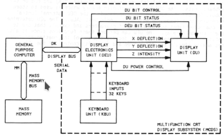
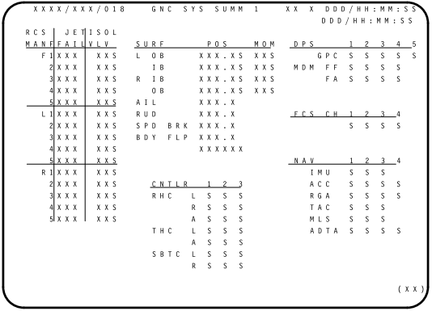
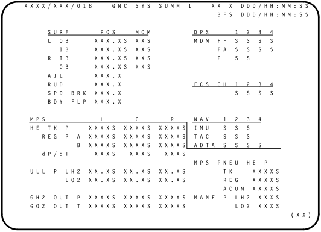
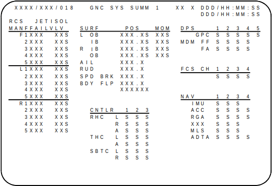
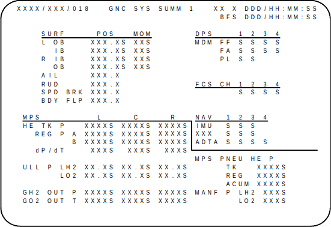

Insofar as the Space Shuttle is concerned, the Virtual AGC
Project's present goals — or if you'd prefer, my goals —
are the following:
To provide the complete source code for the software for the
most-significant of its onboard computer systems, to the extent
allowed by U.S. law.
To provide all of the official documentation needed to
understand that software and to work with it. See the References.
To provide development tools suitable for working with the
software source code, and in particular for
compiling/assembling/linking it into executable form.
To provide an emulator suitable for running that executable
code.
For the emulator to be integrated into space-flight simulation
systems such as Orbiter+SSU or FlightGear.
In essence, we'd like to do the same kinds of things for the
Space Shuttle's onboard computers, and in particular the
computers' software, as we have done for Apollo's onboard computer
systems and software.
I don't pretend to be putting together an "everything
about the Space Shuttle" site. If you want to know about the
Space Shuttle's Main Engines (SSME) or Reaction Control System
(RCS), or hear marvelous facts such as the maximum payload size
being a 15×60 foot cylinder weighing 65,000 pounds, then this is not
the place to look. (But that's big, isn't it?
I never knew.)
Now, there are various nuances to the statements above, such as
whether access to source code must be restricted in some ways,
rather than being freely available. And by "the" source
code, do I mean all revisions? Do I mean for all
components of the system? And by "the" development tools, do
I mean the original ones, or do I mean partial work-alikes?
And by emulation, do I mean emulation of the entire stack of code,
or just for some restricted portion of it? And besides
which, how do I really know which documents may be relevant to
these matters and which may be completely irrelevant?
For example, although I explicitly said above that this isn't
the site to come to if you want to learn about engines (SSME), the
engines were in fact controlled by a dedicated controller
containing two redundant Honeywell
HDC-601 digital computers ... so shouldn't those computers
and their software be covered here?
Answers to those questions will become clear in the sections
below ... or at least, clearer than they are now. There are
a lot of gray areas. And I don't pretend to know all of the
answers yet, so we may need to await future events to have a
more-complete picture. But there aren't necessarily unique,
permanently-correct answers anyway. One thing I can say
unequivocally is that integration into space-flight simulation
systems is my hope rather than anything that I'll actively pursue
personally; integration is the prerogative of the developers of
those space-flight simulators, rather than mine, if they feel it's
worthwhile for them. But it's a bit premature to worry about
that yet.
The upshot is that my explanation of the Shuttle's computer
systems will by necessity be rather limited. The system is
simply too complex, and there are too many resources already
available on the web for me to suppose that a presentation by a
johnny-come-lately like me would be worthwhile or even interesting
about a topic this big. Perhaps the best place to get a
general introduction would be Chapter
4, "Computers in the Space Shuttle Avionics System", of James
Tomayko's Computers in Spaceflight: The NASA Experience,
but there are numerous other documents in our Shuttle
Library to provide more detail.
With that said, here's a brief synopsis. As with any
engineering system of substantial complexity, prepare to descend
into acronym hell!
The portion of the Shuttle's full avionics system which primarily
concerns us is the Data Processing System (DPS), which
includes the General Purpose Computers (GPC), the crew
interface (display and keyboards), the mass-memory units, and the
data-bus network interconnecting all of them. Here's a
diagram, swiped from the aforementioned Computers in
Spaceflight, that gives a very high-level view of the system
architecture:
As you can see, there were five separate GPCs. Each of the
GPCs on later flights was an AP-101S computer, designed and
manufactured by IBM's Federal Services Division (as were the
Apollo LVDC or Gemini OBC, though the GPC was not similar to
them in any noticeable way). Although I may not talk about
the AP-101S much, it's worth mentioning that it was a kind of
embedded version of the IBM System/360 mainframe, in that it
shared roughly the same assembly language, known as Basic
Assembly Language (BAL).
Aside: To be perfectly
pedanticaccurate, the GPCs were originally
AP-101B computers. The AP-101S is an upgrade of the
AP-101B, replacing 416KB of core memory with 1024KB of
semiconductor (CMOS) memory, and possibly other improvements
that I've so far not been able to identify for certain,
though there are various machine-code instructions that I
believe were newly-added in the AP-101S. The upgrade
effort began in 1989, and was first flown in 1991 on STS-37
with software version OI-8F. More on the topic of
flight-software versioning will appear later.
Four of the GPCs nominally redundantly ran identical
software, known as the Primary Flight Software (PFS)
atop the Flight Control Operating System (FCOS).
PFS and FCOS together are collectively referred to as the Primary
Avionics Software Subsystem (PASS).
Aside: In spite of this
technical distinction between the acronyms PFS and PASS, I
find in practice (and have been chided by veterans of the
Shuttle project) that the term PASS was always used in
preference to PFS. In other words, people speak of
PASS vs BFS rather than PFS vs BFS, and stare at you blankly
if you mention PFS to them. Since that is the common
usage, I'm going to adopt it throughout the remainder of
this article, and will not bull-headedly use the acronym PFS
(even though I think it's technically correct) unless the
distinction vs PASS is truly significant.
Nominally, the behaviors of these four copies of FCOS were
synchronized ... not on a CPU-cycle by CPU-cycle basis, but to
the extent that inputs to the GPCs from the spacecraft, as well
as commands output from the GPCs to the spacecraft, occurred at
the same time. In particular, the fact that outputs from
the GPCs were synchronized allowed detection if one of the GPCs
was behaving abnormally. I say they did this "nominally",
because this extreme level of redundancy was warranted only
during critical flight phases ... in particular, during ascent
and reentry. During the more-leisurely phases of the
mission, if additional computing power was needed, the four
principal GPCs did not necessarily need to run identical,
redundant software.
The fifth GPC instead ran the Backup Flight Software (BFS),
created entirely separately from PASS in a clean-room
fashion. And similarly to PASS, the BFS "application code"
ran atop the Backup Operating System (BOS). This
fifth GPC served roughly the same purpose in the Shuttle as the
Abort Guidance System (AGS) did in the Apollo LM. BFS was
specialized for abort functionality, i.e., reentry in the
absence of a reliable set of GPCs running PASS. And as I
said above, this capability was really (potentially) needed only
during ascent or reentry.
The data buses interconnecting the GPCs and peripheral devices,
physically and electrically, were MIL-STD-1553 buses.
The crew-interface devices included:
26 line by 51 character displays, capable also of
displaying some graphics. Prior to about the year
2000, the pilots had 3 of these displays and the crew
specialist had 1; they were monochrome (green text on black
background) cathode-ray tubes (CRTs). After 2000, the
CRTs were replaced by multi-color liquid crystal displays
(LCDs), 9 for the pilots and 2 elsewhere.
Collectively, the CRTs and LCDs were referred to as Multifunction
Display Units (MDUs).
Keyboards. The pilots had 2 of these, and the
mission specialist station had a 3rd.
The pre-2000 configuration was known collectively as the Multifunction
CRT Display System (MCDS), while the post-2000
configuration was known as the Multifunction Electronic
Display Subsystem (MEDS).
In the diagrams below, the pre-2000 configuration is shown on
the left, while the post-2000 configuration is shown on the
right. Notice that the LCD-based displays (on the right)
have 6 buttons along the bottom edges that the CRTs (on the
left) lack, as well as being taller relative to their
width. The LCDs continued to display 51×26 textual
characters, just as the CRTs had, but the text was scrunched
into the upper part of the screen, while a strip along the
bottom of the LCD could display additional stuff that the CRTs
hadn't been able to, such as menu options selectable by the
edge buttons. These differences were transparent to the
PASS / BFS flight software, because the additional stuff
displayed along the bottom was not controlled by the PASS /
BFS software. In contrast, keyboards were the same in
type and number throughout the duration of the Shuttle
program.
There's a more-inclusive diagram below (click to
enlarge) of the entire older configuration of the
avionics system, if you feel the need for one. Personally,
I'm just including it because it's colorful, and you'll need to
dig into the actual documentation if you want real detail.
By the way, you can tell it's the older configuration (MCDS)
rather than the newer one (MEDS), because if you look in the
upper-left area, you'll see "CRT 1", "CRT 2", "CRT 3", and
(somewhat below the others) "CRT 4", rather than the 11 MFDs
you'd see in the newer configuration:
Below, on the other hand, is an extremely-informative diagram of
display-system interconnections that specifically for the newer
MEDS configuration. Don't be confused by the fact that
some of the LCDs are designated by names like "CRT N",
because they're not CRTs; they're just legacy names!
Like the AGC, AGS, and LVDC, which were programmed essentially
in the assembly language native to their CPU types, the Flight
Control Operating System (FCOS) and Backup Operating System
(BOS) were written the assembly language of the AP-101S
CPU. But once you get past those infrastructural software
components, the bulk of PASS application code was written in a
higher-level language called HAL/S, as was the BFS. The DPS
Overview Workbook explains the overall structure of PASS
better than I can:
"PASS software consists of two types of software:
system software and application software. System software runs
the GPC. It is responsible for tasks such as GPC–to–GPC
communication, loading software from MMUs, and timekeeping
activities. Application software is software that runs the
orbiter. This includes software that calculates orbiter
trajectories and maneuvers, monitors various orbiter systems
(such as power, communications, and life support), and
supports mission–specific payload operations. The application
software is divided into broad functional areas called major
functions; in turn, each major function consists of
Operational Sequences (OPS), which are loaded into the GPCs
for each major phase of flight.
"Finally, each OPS has one or more Major Modes (MMs) that
address individual events or subphases of the flight."
Schematically, you can see in the diagram below how the
application software was structured, at least in one version of
PASS. Over the decades in which the Shuttle's flight
software was in use, there were certainly changes to this
structure.
A Brief Visual Tour: Simulating
STS-134
As I explained earlier, we provide an emulator in which the
Shuttle's flight software can be run by executing the actual
software, on an emulated GPC. Of course, to actually see what's
happening, you can't get by with just a GPC, you need
emulations of other peripheral devices as well, such displays,
keyboards, a control panel, an Inertial Measurement Unit (IMU), and
so on. A full range of such emulated devices will only be
available, I'm sure, when the emulated GPC is integrated into actual
spaceflight-simulation systems like Orbiter or FlightGear. But
for demonstration purposes only, we've nevertheless thrown together
a set of emulated peripherals that a least allow us to run the GPC
emulator through its paces and give you a good idea that it probably
works. What I propose to do in this section is to show you the
end result, by running simulations of various aspects of the flight
of STS-134 on our makeshift Orbiter simulator, and then presenting
videos of the simulations.
STS-134, the next-to-last flight of the entire STS program, was
an International Space Station (ISS) mission, having (from my
perspective) the following basic phases:
Prelaunch: i.e., Initial Program Load (IPL) and various other
setups.
Launch & ascent to orbit.
Climbing to the ISS orbit and matching it.
Approach & docking with the ISS.
Staying docked with the ISS for a long, long time.
Undocking & some associated maneuvers immediately
thereafter.
Orbit changes and other preparation for getting back home
again.
Deorbit, entry, & landing.
Plus some other fun but counterfactual stuff, like aborting
the ascent after launch. We've simulated all of that
stuff ourselves, so we know it works. But that doesn't mean
that it's all equally interesting to the casual bystander. The
phases I've emphasized in boldface seem like the interesting ones
— and not coincidentally, the ones that take less time —,
so we'll just confine ourselves to videos of those. Otherwise, I'd
be posting videos of days on end of nothing obvious happening
except drifting around in space and occasionally adjusting orbits
or attitudes somewhat. Then too, we don't need a full 5-GPC
set to for this tour, so we'll economize a bit: We'll just use a
single GPC and as few peripheral devices as we can get away with.
For example, because a full Orbiter control panel is quite a large
thing, and screen space is quite tight in comparison, we'll show
only small, stylized portions of it. If you want to see
fully-synchronized sets of GPCs operating in tandem, you'll get a
chance to see it elsewhere.
Aside: Just to be
clear, our purpose in performing these simulations was
to insure that the GPC emulator was as accurate as we were
capable of making it, and not to produce cute (albeit
rather lengthy) videos. That we were able to produce a video
record of it for you was merely a happy (from our
perspective) side effect.
Note: It's important to give credit
where credit is due, so let me say at the outside that Don
Schmidt has made a very outsized contribution to what I'm
about to show you. More about his work will be described
later, but for now let me just say that without that
contribution there would actually be very little to show you.
The prelaunch process takes several hours of more-than-usual tedium,
so let's just skip past that. First up will therefore be
launch and ascent to orbit! We'll pick up the story at around T-4:30
(i.e., 4 minutes and 30 seconds before launch). The whole
thing is more-or-less autonomous, although the "crew" will do a few
little things along the way. By "the crew", of course, I mean
a script we've written to flip control-panel switches or make keypad
entries at appropriate times, since I didn't want to have to do that
myself. By the way, this might look better if you watch it
directly at YouTube rather than in the embedded viewer below; watch
it in HD (4K or more, if you have it), expand it to fill the whole
screen, and be sure to enable CC (subtitles) or else you won't get
my wonderfully witty explanations of what's going on.
If you know more about it than I do — which believe me, wouldn't be
difficult! — let me know of anything that needs to be corrected. If
it's easy enough and important enough, I might actually do it.
Probably not, though, because it's a big hassle to produce these
things. I already even have a better version of this simulation,
made after a number of bug fixes, but the hassle factor is so great
that it's just sitting on my local computer rather than at YouTube,
and is likely to remain there.
And as long as we're still more-or-less near the launch pad, let's
see what it might have looked like if an abort would have occurred.
In this next simulation, we start out at about T-00:08 and then
launch, but a couple of minutes later force a left-engine fail. This
results in the flight being aborted and returning to Kennedy Space
Center (KSC), or more accurately going to the Shuttle Landing
Facility (SLF), and landing there. This is called a Return To
Launch Site (RTLS) abort. The landing in this simulation is
almost entirely autonomous as well, although in this case that's
unrealistic: Beyond the fact that the abort never occurred in
STS-134, or in any other flight, flight rules didn't allow the
Orbiter to land autonomously after an abort, so the pilots would
have taken over. Nevertheless, the Orbiter was technically capable
of landing autonomously, and I'm certainly no pilot, so an
autonomous landing is what you get.
An RTLS like we just saw wasn't the only kind of abort during
ascent. If the failure occurred at a high enough altitude, then the
Orbiter just continued into orbit. Not surprisingly, that's called
an Abort To Orbit (ATO). I won't bore you with a simulation of
that, but I expect it looks much like any other launch/ascent. Yet a
third kind of abort occurred if the Shuttle had gone far enough from
the launch site to make RTLS impractical, but hadn't yet gone high
enough for ATO. In that case, you could have had a Transoceanic
Abort Landing (TAL), which means that the Orbiter continued across
the Atlantic to land at a designated emergency site in Europe or
Africa. (To complete the full roster, and then ignore it forever,
there were also Abort Once Around, AOA, and Contingency Abort, CA.)
While several such emergency landing sites were available for TAL,
such as Ben Guerir in Morocco or Morón in Spain, I have a
sentimental attachment to Zaragoza in Spain, designated ZZA. That's
actually a joint civil-military airport, but its runway 30L was
available to the Shuttle, so the temptation to make a video for it
overwhelmed me. Here it is, like it or not!
But enough with simulating aborts that never took place in real
life! After the launch & ascent we saw earlier, before the
digression into aborts, it took STS-134 close to 44 hours to get
into the vicinity of the ISS, in an appropriate orbit, so we'll just
skip that. If someone requests a 44-hour video of that ... well, who
knows? Perhaps I'd make it for you without subtitles, to reduce my
own hassle factor. Why does it take so long? Mostly, I expect,
because the ISS is not in a roughly equatorial orbit; rather, its
orbit is highly tilted, so that it varies in latitude between
something like N60° to S60° on each roughly 90 minute orbit. So you
can't just gut it out and blast directly from Cape Canaveral into a
matching orbit. It takes some finessing ... and in space, finessing
takes a lot of time. It's like taking an airplane trip (or bus
trip) in which you have to change planes (or buses) a lot of times:
the trip itself may be short in distance, but all of those transfers
really eat up the time.
Instead, we'll proceed to the next phase after that long
coast to the ISS, namely approaching and docking with the ISS.
Unlike flight phases we saw in the videos above, the Orbiter is not
technically capable of docking with the ISS, and requires a
pilot. Which is a dilemma, since in spite of all the time you spent
watching the videos above, I still have not turned into a pilot in
the meantime. The workaround is that we've written a piloting app
that we can run alongside the simulation. The app can manipulate the
various Orbiter controls just like the pilot can, as well as
assessing the data provided to the pilot. In fact, all it
actually does is make small adjustments using the aft Translational
Hand Controller (THC). Make no mistake: The piloting app is
not as good as the pilot. But it's good enough to perform the
docking, just barely, so it's what you get in the simulation videoed
below. One reason it works is that docking is something that
happens very, veeerrrrrrry slllooooowwwwwwwllllllllllyyyyyyyy. We
start out about 4300 feet (less than a mile, though more than a
kilometer) from the ISS, moving towards it at the pace of a brisk
walk (about 6.6 feet/second). It slows down rapidly from that
point onward, and the hard dock is nearly two hours later!
And in spite of what I said earlier, this is one case in which
bug-fixes resulted in a significantly improved simulation, so you
actually do get an updated video here. Lucky you! Although when I
say "significantly improved", I mean that it's significant in my own
obsessed little mind. The plain truth is that if you saw the
original video, you don't need to watch this one, and indeed might
not even notice the differences.
The docking video
above, and the undocking video below, mark the first appearance of
RPOP. RPOP is a program for a laptop computer that the Orbiter
pilots used during the docking and undocking operations. RPOP
stands for Rendezvous and Proximity Operations Program, and it began
to be used in STS-71, in which the Orbiter rendezvoused with Mir. In
other words, it's not part of the Orbiter's control panel
and doesn't run PASS or be controlled in any way by PASS, though it
does have a cabling connection by which it gets data from the
Orbiter. As I write this, very few people have seen any of these
simulations, but the few who have and who seem compelled to comment
about them invariably point to RPOP as being the coolest part of the
whole thing. Funny story about RPOP ... I used Claude Code AI agents
(and to a much smaller extent Codex and Grok Build agents) to help
me create this makeshift Orbiter simulator. One Claude Code agent
was tasked with creating the program that displays the views out of
the "windows", and the first time I saw RPOP was when I demoed the
out-the-window views for myself. My eyes Ron-popped out of my head —
get it? RPOP'd? —, because not only hadn't I asked for RPOP,
in point of fact I had never even heard of it before then.
Upon inquiry, Claude informed me that, yes it was a real
thing. Claude had read about it in the documentation and
created RPOP of its own accord, just because it seemed like the
right thing to do. And no we didn't actually have any of the
software for it, but Claude had merely followed the documentation,
and came out with something that indeed looks pretty close to the
real thing. I've asked for a few tweaks since then, some of them
very wrong-headed and requiring reversal, but basically RPOP remains
as Claude created it, entirely on its own without any suggestion by
me. True story. On my wish list is actually running that
STS-71 rendezvous scenario with Mir, with RPOP, but albeit not
likely with the correct PASS version for it. Perhaps someday; we've
already prepared the 3D model of Mir for it and it looks pretty
good! But I digress.
Once docked with the ISS on
Flight Day 3 (FD 3), the Orbiter stays there quite a while, until
FD 15. We don't bother simulating any of that. Also,
we didn't simulate some interesting preparation for undocking, in
that the Orbiter adjusts the attitude of the ISS somewhat. I'll
repeat that: The Orbiter adjusts the attitude of the ISS.
We have not bothered to model any of that in the simulation
because it didn't seem to be worth the effort of implementing the
peripherals involved, modeling the dynamics of the ISS, and so on.
Perhaps someday we'll do so anyway. At any rate, the undocking
itself takes place about an hour after that, and simply assumes
that the ISS is already in the appropriate orientation.
Nevertheless, undocking has some other interesting stuff going on
that we do simulate. Immediately after undocking, the
Orbiter does a "fly-around" of the ISS, which is nominally a
circle with a radius of roughly 650-700 feet. There's a graphic of
that to the left. (The ISS is at 0,0, and isn't shown; note
that the horizontal and vertical scales are different, which is
why you don't see anything that looks like a circle.) And then
after that, STS-134 performed a maneuver known as the STORRM DTO,
which is a big, roughly kidney-bean shaped loop that's about 5
miles long by 2 miles wide, continually adjusting the attitude of
the Orbiter so that the bay opening is towards the ISS. The first
of the graphics to the right depicts the as-flown STORRM DTO
trajectory. (Again, note not only that the vertical and horizontal
scalings differ, but that they differ from the other graph as
well. Both graphics are from an analysis by Stuitt.) The
STORRM DTO was part of a continuing series of tests, spread across
a number of flights, for testing instruments intended for the
prospective Orion spacecraft. But for our purposes today, all that
really matters is that the trajectory and attitude of the Orbiter
are correct with respect to what STS-134 actually flew. Achieving
that turned out to be quite the adventure, and in fact we've never
managed fully to do so. There are a number of reasons why that
turns out to be tricky, but one big factor is that STS-134's
as-flown trajectory as shown in the figure didn't fully match the
planned reference trajectory. In fact even contemporary
simulations show that a very wide range of outcomes that can be
expected in trying to fly it. In the second of the two figures on
the right is the planned reference trajectory, with the
yellow circles depicting 3σ deviations of the actual positions of
the various milestone positions in the trajectory. Quite a wide
dispersion! But you can't expect our modern simulator to do any
better than NASA was able to do back in 2011, and indeed it will
not do so; in other words, our simulated STORRM trajectory will
match neither the planned trajectory nor STS-134's as-flown
trajectory, and if we run it again we'll get yet some other
trajectory for our troubles. Of course, they'll all look the same
to the naked eye. Only after milestone SEP3 in the STORRM DTO has
been reached does the Orbiter begin to shape orbit for home, and
that's where the video below leaves off. Beware: The video
is nearly 5 hours long, because the Orbiter traverses the entire
thing (15 miles?) at roughly walking speed!
After that, there's nearly 45 hours of orbit changes in
preparation for being in a position to land. We'll skip past that,
just like we skipped over the 40+ hours between ascent and
approaching the ISS. Instead, we'll just jump ahead to the
deorbit/entry/landing phase of the mission. Like the abort
we saw in an earlier video, the Orbiter lands autonomously. This
wouldn't normally have happened, because it was deemed that human
control would always be safer in the case of events like sudden
bursts of wind, but strictly speaking wasn't disallowed by the
flight rules. For us, though, it's a necessity, since
really-and-truly, I'm still not a pilot.
It is visually different from the earlier abort video, though.
For one thing, STS-134 landed on SLF runway KSC 15, whereas we
forced the abort simulation earlier to instead land on runway KSC
33. For another, our abort was a day landing, while STS-134's
actual landing was at night. The landing is rather exciting in
some ways too. The orbiter performed a sequence of very steep
rolls, from side to side, in which the wings would be almost
vertical, which weren't necessary in the recovery from the abort.
This maneuver allowed it to lose altitude very quickly, but if you
don't know it's supposed to happen, it looks like a mistake by the
simulation; it's, not, though. The Orbiter also comes in quite
fast — faster than a human pilot would, I think — so that you have
to wonder if it will manage to pull up in time to keep from
smacking into the ground at a rather high speed. (Spoiler: No
Orbiters were harmed in the making of this video ... just scared
into retirement. I did smack it into the ground once at 250
feet/second, and we've never been able to figure out why.)
If you want an incentive to watch the video, that's all I have on
tap at the moment.
(This remainder of this section is under construction, and
there's you shouldn't yet believe anything it has to say ... or
at least, not in any detail anyway.)
If you're one of the lucky to whom I've provided the necessary
passwords for one or the other of the MMU tapes we've prepared,
you can in fact try out the simulation for yourself, and maybe
make your own videos if you're so inclined. Or try
simulating a different mission altogether! Of more practical
immediate value, I think, would be some explanation of how the
flight software is structured, and how you use the keypads to
maneuver through the menus. Here's a little tour of that, although
there are so very many menu screens that we haven't the time or
energy to look at every single one of them:
TBD
This has just been a very brief visual foretaste of what's covered
in a lot more detail in a whole series of pages dedicated to the
various stages stretching from just having flight-software source
code to actually running it:
(Optional.) XPL/I
and its compiler. XPL/I is the high-level computer
language in which most of the original development tools for the
Space Shuttle flight software were written.
AP-101S
assembler. For assembling the operating system and runtime
library of the Space Shuttle's flight software.
AP-101S linker.
For turning AP-101S object files into executable memory images.
AP-101S
emulator. For running AP-101S executable memory images on
your Linux, macOS, or Windows computer.
HAL/S and its
compiler. HAL/S is the high-level computer language in
which most of the Space Shuttle flight software was written.
HALMAT emulator.
For running simple (non-flight-software) HAL/S programs without
AP101S object code, linker, memory images, or emulator.
Compiling,
assembling, and linking PASS. I.e., creating memory images
of an entire "memory configuration" of Space Shuttle flight
software ... a much harder task than doing so for a simple,
non-flight-software HAL/S or AP-101S program!
Building
"tapes" of flight software. Real Space Shuttle software is
run not from images of memory, but rather from memory overlays
downloaded from a Mass Memory Unit (MMU), originally a magnetic
tape drive but eventually a solid-state device.
And of course, the actual process of running the flight
software, for which you'll have to consult the original
documentation rather than looking to me. Our Shuttle
Library has many documents that may be of use to you, such
as checklists for the various flight phases, but some I'd point
you to, albeit some not fully contemporaneous with our
flight-software versions (OI-30, OI-34), include:
All documents I can find that I feel are relevant to discussion
of the Space Shuttle's onboard computer systems and their software
have been collected on our Space Shuttle Library page.
That should be your first stop in a documentation
pilgrimage! However, here are some websites that have
additional documents that you may find interesting, and which may
still contain relevant materials that I've overlooked:
PASS, BFS, and Other of the Original Shuttle
Source Code
I have source code and executable code for some late revisions of
the Shuttle's flight software, both primary (PASS) and backup
(BFS, partial only), but this fact will turn out not to be as
exciting for you personally as it may seem on first hearing
it. So do read on before having an emotional reaction!
The fact that the code survives at all is remarkable, given that a
former developer of Shuttle software has told me that:
"When NASA shut down the Space Shuttle project, they erased all
of the backup storage media — since there WAS NO REQUIREMENT for
saving source code! Most of the HAL/S compiler and related
tools (like ... other support software were not saved), but all
of the HAL/S-based flight code was preserved."
In fact, I filed a Freedom of Information Act (FOIA) request with
NASA's FOIA Office to get a copy of the flight software from NASA,
but after several months of looking around they asserted that they
didn't have a copy of it. So apparently NASA fully lived up
to the lack of a requirement for preserving it, in spite of the
assertion of my informant that the flight code had in fact been
mysteriously saved (somewhere) after all. My developer
informant also told me that the Shuttle flight-code was the
most-expensive software-development project of all time.
Good job all around, U.S. Government agencies, preserving
tax-payer investment!
But I digress.
Here's a rough summary of the Shuttle flight software that I do
have on hand (see
here for more information):
GPC memory dumps, disassembled, for PASS OI34.07.
Versioning of PASS is discussed later, but OI34.07
corresponds to flight STS-134.
PASS source code, i.e. PFS+FCOS, for OI34.06 (STS-133).
BFS+BOS fragmentary source code for OI34.01 (STS-128).
It is possible though as yet unproven that the BOS source code
is complete.
PFS source code, i.e. PASS-FCOS, for OI30.17 (114).
That's the good news. The bad news, as far as you
personally are concerned, is two-fold:
We are currently operating under the assumption that this
material is all restricted from "export" from the U.S. by the
regulatory framework known as ITAR, so you would need to be
qualified under ITAR's provisions to receive the code.
But there's much worse: I have been given this code only
on the understanding that the purpose was to "preserve" it and
to use it for compiler development, but not for redistributing
it. In other words, to get it I had to agree not
to show it to you.
I hate both of those restrictions and am hoping in the course of
time that they can be softened or done away with, or at least
worked around in some way. Everything you read on this site
has been done in hope and preparation for that glorious day.
Unfortunately, that "glorious day", if it ever comes, is in the
future rather than in the now.
With that unpleasantness out of the way, here is some of the
original software source code we do have, and which you
can see right now in our source tree:
HAL/S-FC — the HAL/S compiler, used to actually compile PASS
and BFS. More specifically, HAL/S-FC
release 32V0, written mostly in an enhanced version of the
XPL high-level language, with bits in BAL (IBM 360 Basic
Assembly Language) and in AP-101S assembly language as
well. More on
this below.
XCOM — the source code for the original "standard" XPL
compiler. Alas, it is guaranteed not to compile
HAL/S-FC, since HAL/S-FC was written in an enhanced version of
the XPL language, which I call "XPL/I", but which Intermetrics
unfortunately continued to call just "XPL". I will persist
in calling it XPL/I, however, because there are reasons the
distinction is important. Intermetrics's compiler for
XPL/I, to the best of my knowledge, has not survived the end of
the Shuttle program. Nevertheless, there are reasons why
the source code for the standard compiler remains useful, and
perhaps those reasons will become clear below. Although it
is not the contemporary software used during Shuttle
development, I have
myself written an XPL/I compiler called XCOM-I which
is capable of compiling HAL/S-FC.
Is this the Original Source Code?
To the extent that we can present the contemporary source
code for Shuttle-related software here, or to work with it using
the tools provided on this site, some alterations from the
original source code files have been needed. We hope that
these changes are not substantive, but a difference is a
difference, and you're entitled to know about it if you're
interested.
For one thing, Virtual AGC header blocks, consisting of program
comments, are added at the top every contemporary file we receive,
so that you can understand the provenance of the files as much as
possible. These comments are crafted in a way that lets you
distinguish such "modern" comments from the original contents of
the files.
Flight software files, if/when I can eventually show them
to you, are expected to be "anonymized" or "depersonalized", so as
to remove all personally-identifying information related to the
original development teams; thus, whenever the name or initials of
a programmer are discovered in the program comments of Shuttle
flight software, we have replaced them by a unique but impersonal
numerical codes. This is at the behest of some holders of
the original source materials, as a condition for obtaining the
software. Whether this is a temporary or permanent
condition, I cannot say.
Most significant, I expect, is the fact that the character
encoding of all contemporary Shuttle source code has been
completely changed. This necessity arises directly or
indirectly from the fact, unfortunate from our point of view, that
the contemporary character-encoding system used was an IBM system
called EBCDIC (Extended Binary Coded Decimal Interchange Code),
while modern source code (as far as I know) is universally encoded
using 7-bit ASCII (American Standard Code for Information
Interchange) or an extension of it such as UTF-8. But EBCDIC
and ASCII are essentially 100% incompatible, with only rare,
accidental overlaps. The recoding of the source-code files
from EBCDIC to ASCII has been done before we ever received any of
the files, and was performed by unknown people, at an unknown
time, using an unknown process. Nor was it always perfectly
done, and has required occasional corrections by us.
Moreover, the EBCDIC vs ASCII issue isn't quite as simple as the
preceding paragraph suggests, because not all of the EBCDIC
characters used originally actually have ASCII equivalents.
There are special considerations regarding how you need to work
with HAL/S source code in light of those characters not supported
by ASCII.
Here are the general rules:
HAL/S source code should be encoded using 7-bit ASCII
characters.
Two characters originally used in HAL/S source code and in the
original documentation, namely the logical-not character "¬" and
the U.S. cent character "¢", are not present in 7-bit
ASCII. So instead, we use the ASCII characters "~" and
"`", respectively, in place of them. For example,
every time you might have seen something like "x ¬=
y" in the original HAL/S source code or documentation,
we'd expect "x ~= y" instead!
A compiler directive of the form "D VERSION v"
was sometimes used in original HAL/S source code or
template-library files. Here, "v" is a
numerical version code in the range of 1 through 255, represented
as a single EBCDIC character. To reiterate, a single
character position in this compiler-directive string must
represent up to a 3-digit version number. The way they did
this originally was simply to pretend that the version code was
the numeric byte encoding for a character, and to insert that
single-byte numeric code into the string. For example, if
the version was 1, then instead of using the character "1" in
the compiler directive, the numerical byte 1 was inserted.
This would have been legal in EBCDIC, even though rather
inconvenient since in most cases the character would have been
unprintable. In ASCII or UTF-8, the problem goes beyond
that, and such a single-character usage doesn't even represent a
valid ASCII or UTF-8 character half of the time. So we
cannot continue to follow this odd practice. Our change is
to instead require this compiler directive to have the form "D
VERSION xx", where xx is a
2-character string of hexadecimal digits.
Aside: With that said, if your
operating system supports UTF-8 character coding rather than
simple 7-bit ASCII, you can continue to use "¬" and "¢" in
HAL/S source code. The compiler transparently converts
them to "~" and "`" during the compilation, and then converts
them back to "¬" and "¢" in printouts or in messages it
displays. In particular, this does work fine in Mac OS
and Linux, though there may be special considerations trying
to do this in Microsoft Windows, discussed later. In
some of the source code we receive, ¬ has instead already been
replaced by "^". Thus any software we provide also
silently converts "^" to "~".
A longer explanation is that for some decades now, the most-common
character encoding in the U.S. has been 7-bit ASCII, 128 characters
in all, sometimes called "plain vanilla" ASCII or just
"ASCII". But since the Space Shuttle's flight software was
originally developed on IBM mainframe systems like System/360,
rather than using ASCII it used an 8-bit character-encoding scheme
called EBCDIC. It's pretty difficult to find any two EBCDIC
tables that agree on all 256 characters, because various IBM systems
seemed to have used slightly-different versions of EBCDIC. But
here are ASCII and EBCDIC tables I pulled from Wikipedia that give
the basic idea:
ASCII (1977/1986)
0
1
2
3
4
5
6
7
8
9
A
B
C
D
E
F
0x
NUL
SOH
STX
ETX
EOT
ENQ
ACK
BEL
BS
HT
LF
VT
FF
CR
SO
SI
1x
DLE
DC1
DC2
DC3
DC4
NAK
SYN
ETB
CAN
EM
SUB
ESC
FS
GS
RS
US
2x
SP
!
"
#
$
%
&
'
(
)
*
+
,
-
.
/
3x
0
1
2
3
4
5
6
7
8
9
:
;
<
=
>
?
4x
@
A
B
C
D
E
F
G
H
I
J
K
L
M
N
O
5x
P
Q
R
S
T
U
V
W
X
Y
Z
[
\
]
^
_
6x
`
a
b
c
d
e
f
g
h
i
j
k
l
m
n
o
7x
p
q
r
s
t
u
v
w
x
y
z
{
|
}
~
DEL
EBCDIC
0
1
2
3
4
5
6
7
8
9
A
B
C
D
E
F
0x
NUL
SOH
STX
ETX
SEL
HT
RNL
DEL
GE
SPS
RPT
VT
FF
CR
SO
SI
1x
DLE
DC1
DC2
DC3
RES/
ENP
NL
BS
POC
CAN
EM
UBS
CU1
IFS
IGS
IRS
IUS/ ITB
2x
DS
SOS
FS
WUS
BYP/
INP
LF
ETB
ESC
SA
SFE
SM/
SW
CSP
MFA
ENQ
ACK
BEL
3x
SYN
IR
PP
TRN
NBS
EOT
SBS
IT
RFF
CU3
DC4
NAK
SUB
4x
SP
¢
.
<
(
+
|
5x
&
!
$
*
)
;
¬
6x
-
/
¦
,
%
_
>
?
7x
`
:
#
@
'
=
"
8x
a
b
c
d
e
f
g
h
i
±
9x
j
k
l
m
n
o
p
q
r
Ax
s
t
u
v
w
x
y
z
Bx
^
[
]
Cx
{
A
B
C
D
E
F
G
H
I
Dx
}
J
K
L
M
N
O
P
Q
R
Ex
\
S
T
U
V
W
X
Y
Z
Fx
0
1
2
3
4
5
6
7
8
9
EO
In UTF-8, the funky characters "¬" and "¢" are represented by the 2-byte
sequences 0xC2 0xAC and 0xC2 0xA2, respectively, and they don't
appear at all among the 128 characters of ASCII, but do appear among
the 256 characters of some versions of EBCDIC.
HAL/S
HAL/S is a high-level programming language in which the PASS and
BFS application software was written. Whereas
infrastructural software (like operating systems and run-time
libraries) was written in whatever assembly-languages were native
to the particular CPUs running that code.
Here's a brief overview of HAL/S, but if you want to know more,
you should look at the
dedicated HAL/S page.
HAL/S is a compiled language, and the HAL/S flight-software
source code was compiled down to a machine-code executable before
it could be run. Compilers existed for it that could be used
on several different types of computers. Some of the
compilers produced code that could be run on an IBM System/360
mainframe; others could produce executable code for the Shuttle's
IBM AP-101S onboard computers; others produced executable code for
other computers.
I'm sure you can't help but notice that "HAL" was the name of the
computer in the movie 2001: A Space Odyssey, which came
out in 1968, not too many years before the HAL/S language was
invented. In the movie, H.A.L. stood for "Heuristic
Algorithmic Logic", and many people have observed that H.A.L. was
just one letter away from I.B.M. (I.e., "H" is one letter
before "I" in the alphabet, "A" is one letter before "B", and "L"
is one letter before "M".) The writer of the movie, Arthur
C. Clarke, maintained that that was simply a coincidence.
Where the "HAL" in HAL/S comes from has likewise been explained in
several ways, none of them relating to 2001: A Space Odyssey.
The HAL/S language was invented (and the flight software was
written) by a company called Intermetrics, many of whose employees
were refugees from the same Draper Laboratories (MIT
Instrumentation Laboratory) at which the Apollo flight software
had been written. One of those refugees was Ed Copps, one of
Intermetrics's founders, who is said to have named the HAL/S
language in honor of Hal Laning, perhaps the most-prominent among
the designers of the Apollo Guidance Computer's hardware.
Others offer the explanation that HAL/S is an acronym for
"High-order Assembly Language / Shuttle". Still
others state that "the acronym 'HAL' was never formally
defined". I have even seen one report (NASA-CR-141758) that
refers to it as "Houston Aerospace Language". Well, who
knows? It's fun to make up your own mind about which
constellation of facts matches your own preferences.
Probably not Houston Aerospace Language! But all I
can really say for sure is that there's nothing "heuristic" about
HAL/S, even if 2001 may secretly have been somewhere in
the back of somebody's mind.
But I digress. As I was saying, the HAL/S software for some
revisions of the Shuttle's PASS and BFS still survives, which is
much better than the alternative of it not existing anywhere even
if (as I explained earlier) I cannot presently show you any of it.
Working with the PASS/BFS source code requires knowledge of the
HAL/S language. Fortunately, we have a fair amount of
documentation of that which you can see:
The recommended starting point is "Programming
in HAL/S" by Michael Ryer, which was intended as an
introduction to programming in HAL/S and is organized as a
tutorial.
A great supplement to Ryer is the course material for "Basic
HAL/S Programming" by Craig Schulenberg. Additional
material associated with that course can be found on our Shuttle
library page.
Ryer's book points out that it is not a definitive exposition
of the language, and recommends proceeding afterward to the "HAL/S
Language Specification", which contains a much-more-formal
specification of the language syntax, both in the form of graphs
of the syntax and in Backus-Naur form (BNF).
And then there's the "HAL/S-FC
User's Guide" explains how to compile and execute a HAL/S
program. That explanation is, of course, completely
irrelevant to our present situation, but you may find that the
document answers some questions left unanswered by the preceding
documents. (You many notice as well that our library
contains a "HAL/S-360 User's Guide"; that's simply a predecessor
of the "HAL/S-FC User's Guide". The former assumes that
the computer on which the compiler ran was an IBM-360, while the
latter assumed it was some arbitrary "mainframe" to which the
compiler had been ported.)
We actually have quite a few revisions of some of these documents
(and others) in our library, spanning the mid-1970's to the
mid-2000's, though I've only chosen to link the latest versions of
those documents above, even though from time to time the latest
revision isn't always the most complete one.
Here's a brief sample of HAL/S code from "Programming in HAL/S",
just to give you its flavor:
FACTORIAL: PROGRAM; DECLARE INTEGER,
RESULT, N_MAX, I; READ(5) N_MAX; RESULT = 1; DO FOR I = 2 TO N_MAX BY 1; RESULT = I
RESULT; END; WRITE(6) 'FACTORIAL=', RESULT; CLOSE FACTORIAL;
What this program does is to read a number (N_MAX),
compute its mathematical factorial, then output the result.
While I won't dissect this short program in detail, I can make a
couple of observations. For one, the language is strongly
typed, meaning that every variable has a type that's
declared at compile time, and that storage for it is fixed and
unalterable at run-time. Nor is there any dynamic memory
allocation (as well as no stack and no recursion), so RAM usage is
completely known at compile time. HAL/S programs never
unexpectedly abort because memory has filled up. The other
observation is that the READ(5) and WRITE(6)
statements are very familiar to FORTRAN users ... or at least to
FORTRAN users of (shall we say?) a certain vintage. In
FORTRAN-speak, the 5 and 6 are "logical unit numbers" (LUN) whose
specific interpretation as keyboard and printer (or keyboard and
display, or even as files) are assigned externally by the Job
Control Language (JCL) used to run the job. This reflects
the fact that the first HAL compilers targeted IBM 360 computers
rather than the Shuttle's computers. In the Shuttle
software, these READ and WRITE constructs, I think,
wouldn't have been used, and keyboard input or display output
would instead have been handled by calls to the run-time library.
HAL/S actually has many novel features not visible in the FACTORIAL
example, such as those devoted to real-time response and scheduling
of execution. Again, I won't get into most of those
here.
With that said, perhaps the most-novel feature is a superficial one,
namely the ability to express mathematical formulae in a multi-line
format that the language's designers felt was more self-documenting
than the usual single-line manner of expressing mathematical
formulae in programming languages. One comment made several
times in the documentation is that it's worthwhile spending a lot of
effort making source code easy to read ... because more time will
eventually be spent reading the code than was spent writing
it. I.e., the time lost in creating readable code is more than
made up for by the savings in maintaining the code later. This
is sound engineering doctrine, according to the software-design
literature of the time ... but very far from today's actual
practice and attitudes (2022), in which the initial design schedule
is everything, and downstream maintenance is an afterthought
performed by somebody management doesn't have to budget time or
money for today. That turns out not to be a problem
for HAL/S, though, because while you could input source-code
in this supposedly more-readable multi-line format, you weren't
required to, and usually did not do so. Instead, you just
input the source code in whatever manner was most convenient and
efficient for you. But regardless, the compiler always
"pretty printed" that same source code in multi-line format in its
output listings, so you got the benefit of readability without the
hassle of personally making it readable.
Were the HAL/S designers on the right side or the wrong side of
history in this debate? (The answer is an exercise for the
reader.)
What the multi-line format mainly does is to allow a more-natural
representations of superscripts and subscripts. Here's a HAL/S
sample that illustrates the multi-line pseudo-mathematical format:
E - M BC = VECTOR (LONG, 0); S
2 E - M DA = VECTOR (SHORT COS(ALPHA), SHORT
SIN(ALPHA)); S
2 E -
- - M CD = BC + DA;
E
- - - - M WRITE(6) AB, BC, CD, DA; CLOSE CORNERS;
Seeing this example, your immediate reaction is likely: Yes, they
were definitely on the right track here! If so, I'd invite you
to consider what the result would be like if any these lines of code
exceeded the 72 columns in which they'd normally have to fit on
punch cards, and ask yourself if this format were still readable if
long statements were wrapped around into one or more additional
continuation lines?
What this example program does is to allow input of parameters
describing a parallelogram — namely, the lengths of a "short" side
and a "long" side (which is assumed to be along the x-axis),
and the angle between them in radians — and then to output the (x,y)
coordinates of the four corners. The code also illustrates
another of HAL/S's novel features, in that it can do arithmetic not
just on scalar variables like integers or floats, but also do vector
arithmetic or even matrix arithmetic. For example, vector/matrix
addition or subtraction, vector dot products or cross products,
matrix multiplication or inversion, etc. Functions like COS
or SIN or VECTOR2 (which forms a
2-vector from two scalar inputs) were available in the run-time
library or as compile-time arithmetic when appropriate.
It's important to realize that the lines with the leading characters
E, M, and S in the example above are
active code rather than merely program comments. In HAL/S,
column 1 has a special purpose. Normally that column is
blank. True, if a C appears there, it actually is
a full-line comment, just like in Fortran. If a D
appears there, then the line is a compiler directive. But for
a multi-line mathematical form, M in column 1 indicates
the formula's "main" line, whereas E indicates an
"exponent" line and S indicates a "subscript" line.
You can see that several places above. When this multi-line
math format is discussed, it's generally described as a "3-line"
format. But in fact, there was no limit to the number of E
or S lines associated with a given M line.
For example, here's some valid code:
E
DEX$J
E
I
I
M
COEF
ALPHA
S
L
S
M**2
But you'll notice that if you have a subscript in an E
line or an exponent in an S line (as in DEX$J or
M**2 above), you just have to live with those
little bits remaining in single-line notation. (In fact,
there's not even any real need to put an M in
column 1 for a main line, since the M meant exactly the
same thing to the original compilers as a blank in column 1.
I'm told — thank heaven! — that nobody ever actually did omit the M's.)
In the multi-line math format, if a variable (like AB) has
a '-' above it, that means that AB is really a
vector. Actually, a 2-vector, in the example code above.
That's reflected in the declaration "DECLARE VECTOR(2), AB, ...".
And '-' isn't the only datatype-related character that can
appear in the E line above a variable in the M
line:
'-' for vectors.
'*' for matrices.
',' for strings.
'.' for booleans.
'+' for structures.
Collectively, these were referred to as "overpunches".
My impression is that creating source code in this multi-line format
is a pain in the neck, since aligning the columns cards isn't that
easy. But as I said, HAL/S doesn't actually require
the use of this E/M/S multi-line format for (input of)
mathematical formulas. A single-line format is perfectly valid
as well, and for the CORNERS program would look like this:
CORNERS: PROGRAM; DECLARE SCALAR,
LONG, SHORT, ALPHA; DECLARE VECTOR(2),
AB, BC, CD, DA; READ(5) LONG, SHORT, ALPHA;
AB = 0;
BC = VECTOR$2(LONG, 0);
DA = VECTOR$2(SHORT COS(ALPHA), SHORT
SIN(ALPHA));
CD = BC + DA;
WRITE(6) AB, BC, CD, DA; CLOSE CORNERS;
In the single-line format, The beginning of a subscript is indicated
by the '$' character.
One thing you may take away from this is that the overpunches ('-',
'*', '+', ...) which appear on the E
lines to indicate vector vs scalar variables weren't really needed,
since they don't show up in the single-line notation at all; in
fact, they're just eye-candy that's nice for readability, and are
actually discarded by the compiler. Whereas the subscript '2'
which appears on the S line is in fact quite necessary,
since VECTOR() isn't the same thing as VECTOR2(),
which isn't the same thing as VECTOR3().
There was also a kind of decoration which the compiler added to
invocations of "macros", which were string substitutions (like the #define
in C or C++) made on the source code before any actual compilation
was performed. Such invocations were underlined in printouts.
My guess is that almost all source code was written in the
single-line format ... and indeed, I've been told by one of the
original developers that this is so. However, realize that yet
another novelty of HAL/S is that the original compiler allowed the
programmer no control whatsoever over the format of the
output compiler listings. Those were always
pretty-printed according to the standards decided upon by the
designers of the compiler. (Well, I think that maybe
pretty-printing could be turned off, but that doesn't mean the
person writing the code controlled the format.)
The same is true of any other formatting decisions. I
mentioned above that column 1 of the source code has a special
purpose, and thus it matters what characters appear in column 1 vs
other columns. But for all lines which have blanks in column
1, the input source code is completely free-form: Multiple
statements can appear on a single line. Individual statements
can be broken across multiple lines. Empty lines and
whitespaces within lines are ignored, except where at least one
space is needed between two adjacent identifiers. (And except
in comments or literal quoted strings.)
The latter point is interesting in connection with the operation of
multiplication. While HAL/S has the usual operators for a lot
of mathematical or logical operations, such as "-" for
subtraction, "/" for division, "**" for
exponentiation, and so on, it has no operator for multiplication.
Multiplication is indicated simply by placing variable names,
constant names, or literal numbers adjacent to each other (separated
by whitespace). For example,
DECLARE SCALAR, X, Y, Z;
DECLARE INTEGER, I, J, K;
X = Y Z ;
I = 2 J K ;
By the way, SCALAR is what HAL/S calls its
floating-point type; thus SCALAR contrasts with INTEGER
or BOOLEAN datatypes, but not with VECTOR or MATRIX.
In fact, all VECTOR and MATRIX objects consist
entirely of SCALAR values. You can't have (say) a
VECTOR of INTEGER values. On the other
hand, there is an ARRAY type, of arbitrary
dimensionality, which can hold values of any datatype you like,
including VECTOR and MATRIX. And as it
turns out, there actually is an operator '*', but it is
the vector cross-product operation, not a multiplication of two
numbers. Similarly, the '.' operator is a vector
dot product.
Software Versioning
As I've described above, any given shuttle had a number of
computers, running a lot of different software components — more
than just the GPCs running PASS/BFS we're discussing here.
Each of these software components had their own unique
versioning. I couldn't begin to tell you what those all are;
I don't even have a list of all the different computers or their
software components, let alone details about their versions.
However, in all but the very earliest missions, the collection
of all of the software components at their various revision levels
was itself identified by what's called the Operational
Increment (OI). You thus see various Shuttle documents
specifying "OI-24" or "OI-33", and what this means is that those
documents are specialized to those particular overall software
versions. The versioning of individual software components
of the overall software version was apparently by Version
Increments (VI), such as "VI 1.23".
At this point, I have no authoritative single document that links
software versions to specific Shuttle missions. For what
information I do have, I'd refer you to the Space
Shuttle Missions Summary. In the following tabulation,
sorted by software version, notice that a higher STS mission
number sometimes has a lower software version number, presumably
partially because the mission numbering doesn't perfectly agree
with the chronological order in which the missions were
flown. For that matter, notice confusing duplicate numbers,
like the entire range STS-26 through STS-33 (skipping STS-29); not
my fault, blame NASA! In a burst of animal spirits, I've bolded
entries below for which it's believed that we have any significant
amount of the actual software.
For example, the presentation for the STS-121
Flight Readiness Review (FRR) tells us that the software
version was OI-30, in agreement with the table above, while just
the Integrated Display Processor (IDP) software component was
version VI 4.01 and the Multifunction Display Unit Function (MDUF)
was version VI 5.00.
Multi-Function Display Formatting and
Versioning
As was mentioned earlier in the Introduction, the principal method by
which the General Purpose Computers (GPC) running the primary
flight software (PASS) and backup flight software (BFS) interact
with the crew includes keyboards and display screens. What's
unusual about the display screens is that what appears on them is
only partially controlled by the PASS or BFS
software. Instead, there was another processor sitting
between each of the displays and the GPCs, and it was this extra
processor that directly controlled what was displayed and how the
display was formatted. (For that matter, the keyboards also
were attached to one of these extra processors rather than to the
GPCs, so whatever keystrokes were seen by the PASS / BFS software
had already been pre-digested by these extra processors.)

In the case of the older, pre-2000
cockpit configuration (MCDS, 4 CRTs), this extra processor was
known as the Display Electronics Unit (DEU), and it
consisted of an IBM SP-0 CPU with 8K×16 bits of RAM. In the
case of the newer, post-2000 cockpit configuration (MEDS, 11
LCDs), the extra processor was known as the Integrated Display
Processor (IDP), an Intel 368DX microprocessor. The basic
schema is seen in the diagram to the right. While the
diagram is specific to the older (MCDS) configuration, the newer
(MEDS) configuration is conceptually quite similar. In the
case of the MEDS configuration, the software for the IDP that was
specifically tasked with formatting the display was called the Display
Application Software (DAS). But these kinds of details
are of little interest to us in the absence of the DAS or other
software that actually ran on the DEU/IDPs. So the only use
of these factoids I'll make in the context of the present
discussion is to refer from now on to what I've been calling the
"extra processor" instead as the "DEU/IDP".
What is of importance to us, however, is that in addition
to inputs from the GPCs via the MIL-STD-1553 databuses, the
DEU/IDP's RAM was used to store a set of templates that controlled
the formatting of the display screen. These templates were
loaded from mass memory into RAM at power-up. In other
words, the screen templates are independent of the PASS /
BFS source code.
For illustrative purposes, there's an example below of the template
for screen "GNC SYS SUMM 1" for mission STS-96. It comes in
two varieties, one for the primary flight software, and one for the
backup flight software:

PASS GNC SYS SUMM 1 screen, STS-96

BFS GNC SYS SUMM 1 screen, STS-96
As you can probably deduce from these images, some of the areas
are supposed to be updated with data from the GPC (or elsewhere in
the spacecraft), such as the HH, MM, and SS in the upper-right
corner or the X's and S's that are all over the place. Other
markings, like the "SURF", "POS", "MOM", and "DPS" are simply
features of the template, and don't change at the whim of the GPC
or more specifically, of PASS or BFS.
The screen templates don't quite fall under the
Operational Increment (OI) top-level software-versioning scheme
we've already discussed. They do, but they are also
controlled by Program Change Notices (PCN). The
examples above are for STS-96 which flew software version OI-27,
but that doesn't mean that all missions using OI-27 necessarily
had identical screen templates. In a practical sense, what
this means is that to know the screen templates and consequent
display-screen formats for any given Shuttle mission, we must have
not merely the screen templates for that generic OI, but also the
differences to those templates that were made due to specific PCNs
... and of course, actually have the associated documentation so
that we can consult it.
On the other hand, the Functional Subsystem Software
Requirements (FSSR) documents also contain these
templates, and seem a lot more authoritative, as well as providing
a lot more information. In fact, the FSSR goes so far as to give
screen coordinates for each field, and to explain how every datum
received by the DEU/IDP via the databus relates specifically to
each X and S on the display screen! Unfortunately, the FSSRs
are also a lot more numerous and a lot harder to find than DPS
Dictionaries are, so the dream of obtaining a complete set of them
seems more whimsical than obtaining a complete set of DPS
Dictionaries. Nevertheless, on balance, it seems as though
the FSSRs should be regarded as the controlling documents for the
screen templates. We just need to collect all of them, or
failing that, fall back on DPS Dictionaries when available.
For example, here are the same GNC SYS SUMM 1 templates, but for
software version OI-34 (say, mission STS-128), taken from the
FSSR. They're different than the ones shown above for
STS-96, though only barely so. Personally, I see only 4
differences, some sensible, some nonsensical, and some (I suspect)
misprints; perhaps you can find more. Incidentally, STS-96
had the MCDS (pre-2000) cockpit configuration, while STS-128 had
the MEDS (post-2000) cockpit configuration, so perhaps that has
something to do with the differences.

PASS GNC SYS SUMM 1 screen, STS-128

BFS GNC SYS SUMM 1 screen, STS-128
Computer-to-Peripheral Interface
Keyboard data was supplied to the General Purpose Computers
(GPC), and hence to the PASS/BFS software, by means of messages on
the MIL-STD-1553 databuses interconnecting the GPCs and
DEU/IDPs. Similarly, data was output by the GPCs for display
by passing messages on the databuses as well. Technical
details about this messaging can be found in the Data
Processing System Brief. I won't bother to summarize
that information here, since the document's presentation is at
least as readable as anything I might write up to supplement
it. While our only available revision of this document so
far is for the MCDS, recall that the change from the MCDS to MEDS
cockpit configurations was done in a way that was transparent to
the existing software. That implies, I hope, that the
messaging format would have been the same in either configuration.
Running the Simulation
In an ideal world, our GPC-simulation software (yaGPC2),
or other GPC-simulation software, would be integrated into
spaceflight-simulation systems such as Orbiter or FlightGear,
and you could fly simulated Shuttle missions executing true PASS
using those systems. That's not the world we live in at present
... as far as I know. (Perhaps these systems are just drowning in
an abundance of PASS and I'm unaware of it.) Nevertheless, you've
already seen in our "brief tour" that there are enough
simulated peripherals in the Virtual AGC ecosystem to fly
essentially an entire STS-134 mission, at least insofar as
guidance, navigation, and control are concerned, for it to act
like a somewhat aesthetically-challenged spaceflight simulator. So
in this section and its subsections I want to talk just about how
to set up a Linux, macOS, or Windows computer to run such
simulations.
Important note:
The basic elements of the simulation system were not
created here at Virtual AGC, but were merely adapted from
earlier work by Don Schmidt, which you can see in his
own repository. Specifically, Don created the first GPC
emulator and MEDS display simulation, as well as contriving
the networking interface used to communicate among emulated
GPCs and peripherals. Furthermore, his work is the basis for
creation of Mass Memory Unit (MMU) "tapes" from which
executable code is loaded into the GPC memory, and getting the
Initial Program Load (IPL) process to work. Don's work
continues as of this writing, and indeed it is possible that
you may see better (or at least different) simulation
capabilities at Don's website than here. Nevertheless, every
element of the simulation here at Virtual AGC has now diverged
from Don's work, albeit with great gratitude; all of this may
have taken years longer to provide, or may ultimately not have
been provided at all, without Don's contribution. The
divergence was due to pragmatic issues such as scheduling.
In order to actually run a simulation, besides yaGPC2 and
the simulated peripheral devices, several other things may be
needed, and are provided (with some provisos necessitated by ITAR
and other secular constraints):
You need a "tape" for the Mass Memory Unit (MMU), from which
flight-software overlays can be loaded into GPC memory as
needed.
You may need a "snapshot" of the system's state that's near in
time to the portion of the simulation you'd like to run. The
entire STS-134 mission was about 16 days long, so unless you
want to just start at the beginning (Initial Program Load, IPL)
and run it for 16 days, you probably only want to run a small
portion of it, such as landing. To do that, you can start from a
snapshot of the internal state of the mission from shortly
before when you want your own simulation to start. Except for
the 12-day period when the Orbiter was docked to the ISS, we
have snapshots from throughout the mission.
You may want scripts to carry out operations during the
simulation that you're either not qualified to do, or simply
don't want to do. For example, there are scripts to dock with
the ISS, undock from it, perform autonomous landings, etc.
Depending on how much you're willing to do manually, these
scripts may not be needed.
The Tiered-Access System
Because of potential legal fears about the U.S. regulatory
structure known as ITAR — as well as constraints due to agreements
I've entered into in order to obtain the flight software — I'm not
giving the unlimited access to Space Shuttle flight software that
I'd like, and have had to think long and hard about how to provide
any access at all. To date, attempts to get any definitive advice
from persons qualified to give it have proven to be less than
fruitful. My own reasoning suggests that access should be freely
given without any restrictions, but I've made imaginary
counter-arguments to my own reasoning, counter-arguments to those
counter-arguments, and so on. What I've settled on as a
result of that reasoning is to construct a tier of different
access levels, depending on what depths of paranoia I feel I must
descend in order to feel safe from legal persecution, and the
status of the recipient as a U.S. citizen or other type of "U.S.
person" under the law. But some of the details remain to be
determined. Depending on what I eventually decide is legally
safe enough, what you can have access to (and hence what kind of
simulations you can run) depends on what tier I assign you
to. For now, while I'm still thinking about it, very
few people get access to any access to any tier. But hope
springs eternal, and hopefully there will be pie in the sky,
by-and-by.
There are 5 tiers, with differing access control and content,
with tier 0 containing the most stuff and tier 4 the least. The
table a little below tells you want that stuff is on a
tier-by-tier basis. What I visualize happening is that tier 4 will
at some point be offered freely with no access control; and then
at some later time, tier 3 would be released; and so on with some
other tiers. How far that process progresses, or what the schedule
for it may be, I don't currently know. If you want to get access,
here's how it stands right now:
Tiers available for unrestricted access: None yet.
Other tiers: Apply directly to me, and if I like your sob
story enough, perhaps I'll give you access to whatever tier I
deem most appropriate.
Not too satisfactory, I know! Here is the whole mess of my
own ITAR reasoning, as well as a description of what's in the
tiers, in tabular form. Naturally, it only applies to export,
since ITAR does not restrict what U.S. citizens on U.S. soil can
access. Keep in mind though, that as I've explained earlier, ITAR is not the only
thing that constrains me.
Tier
My Own Argument (or
Counter-Counter-Argument) For Free Access
What You Get
Accessible Files
What This Lets You Do
Imagined Counter-Argument*
0
No surviving Space Shuttle is capable of
flight. All have been decommissioned and are in museums. The
last one was built in 1991. A.I. estimates that the cost to
build a working Space Shuttle today (2026) would be about
$60 billion. The flight software works only for actual
Space Shuttles, not merely for random launch vehicles. Of
course, the flight software itself is based on 30+ year-old
technology, and would not be used today by any rational
person, particularly if you could just say to Claude Code,
"write me a guidance system for my missile". Each one
of these reasons, taken separately, adequately demonstrates
that there's no reason to restrict access to the Shuttle's
flight software.
All source code, executable code,
contemporary reports about the internals of the code.
Everything.
Study flight code, compile it, assemble
it, and run all types of simulations.
No! Somebody could still adapt the
source code to work with a different launch vehicle other
than a Shuttle.
1
If the source code and associated reports
about the internal details of the code were kept restricted,
the executable code could not be adapted, and would
have to be used as-is, so it could only be used on an actual
Space Shuttle, which I've already argued is impossible.
All executable
code.
Tier 1 MMU tape:
OI340700-OPS1.7z
Tier 3 snapshots: STS134-snapshots.7z
Scripts
Run all types of
simulations.
No! Perhaps somebody could steal an
Orbiter from a museum and somehow restore it to full
functionality.
1
You wouldn't need merely an
Orbiter, but also an External Tank (ET), Solid-Rocket
Boosters (SRB), and a suitable launch site. During
the Shuttle era, the only suitable launch sites were KSC
LC-39A and LC-39B, plus Vandenberg AFB SLC-6. All of these
have since been re-purposed and no longer have the
capability of launching Shuttles. A.I. estimates the cost of
a new Shuttle launch site (2026) as $10-15 billion.
No! Maybe somebody could build a new
launch site anyway.
1
The flight software only supports
the 3 launch sites just mentioned. You couldn't launch a
Shuttle from some other launch site.**
No! We don't like the idea that the flight
software supports launches, even if launches are impossible
for other reasons.
2
Okay, let's remove the OPS 1 (launch and
ascent) and OPS 6 (abort and return to launch site) code
from the executable. Then there's no possible way to get the
Orbiter to even leave the launch pad.
All executable code except for OPS 1 and
OPS 6
Tier 2 MMU tape: OI340700-OPS3.7z
Tier 3 snapshots: STS134-snapshots.7z
Scripts
Run all types of simulations except
launch, ascent, or abort.
No! Maybe some other huge launch vehicle
is used to carry the Orbiter into orbit, so the Orbiter's
flight software doesn't need to control the launch or ascent
itself. In principle, the SpaceX Starship has the
capacity to carry a 150 ton payload, and the Orbiter (fully
loaded with propellant) is slightly less than that.***
3
Well then, let's remove OPS 3 (entry and
landing) code from the executable as well. If the
Orbiter can't come down, then it can't be used to target
anything on the ground, so it can't be used as a weapons
system.
All executable
code except for OPS 1, 6, and 3.
Tier 3 MMU tape:
OI340700-OPS2.7z
Tier 3 snapshots: STS134-snapshots.7z
Scripts
Run on-orbit
simulations, including orbit changes, rendezvous, docking,
undocking, fly-arounds.
No! Even though it couldn't land,
OPS 2 could still make a change to a different orbit that
intersected the Earth's surface at a given point, and
therefore still could be used to deliver a destructive
payload, or even just as a high speed mass.
3
No, it couldn't. If the Orbiter entered
the atmosphere at Mach 25 with no control over its
trajectory, you couldn't hit a target on the ground. The
Orbiter would simply burn up or explode in the atmosphere.
Perhaps the Orbiter could still be used as
a satellite-killer, to seek out and destroy satellites in
orbit.
3
No, the flight software has no support for
seeking out such targets, nor does the guidance system have
the accuracy required to hit such targets if it did.
No! There's some other reason you don't
know about why it's still bad. We refuse to let there be any
guidance control in the flight software at all.
4
If we remove all guidance software (OPS 1,
2, 3, and 6), leaving just the operating system and the
mass-memory utilities, there's nothing left that controls
the Orbiter in any way, and essentially just treats the GPC
(or rather sets of GPCs) as a disembodied brain.
Just OPS 0 and OPS 9
Tier 4 MMU tape: STS-134-OPS0.7z
Scripts
Initial Program Loads (IPLs),
synchronization of sets of GPCs, viewing of menus on display
screens, copying data to/from Mass Memory Units (MMU).
(I can't think of any argument here that
wouldn't be pure fascism, so I won't bother to invent
anything.)
*I speak
merely from common sense, of course, and if the actual
hidden counter-argument is "the law doesn't care if you have
common sense on your side", or perhaps "we don't intend to
relinquish any of our control over you", I admittedly have
no comeback for that. Also, the counter-arguments I list
don't necessarily make much sense, but they're what years of
thought have managed to come up with. **To be pedantically accurate, there are 6 other
specific launch sites supported by the flight software, but
none of them are (or ever were) physically equipped for that
purpose. ***I think at this point you've have to wonder
what you even needed the Space Shuttle for, if you already
had a SpaceX Starship or something of similar capacity to
launch it, and if a SpaceX Starship could even carry an
object like the Orbiter. But for the sake of
discussion, let's just pretend that these counter-arguments
make sense.
Some of the counter-arguments are more sensible than others, but
even collectively don't seem compelling. Of course, I may be biased.
One-Time Setup
I have tried this on:
Linux Mint 22
macOS Golden Gate
Windows 11 (native)
Windows 11 (WSL)
Raspberry Pi 5 with Raspberry Pi OS.
Note: Unlike my
normal procedure for Virtual AGC software, I have not tried
any of this in Windows with MSYS2. Since it actually works
without any difficulty in native Windows, there seems to be
little point in worrying about MSYS2. If you try it, let me
know how it works out.
Note: Indeed, there's little point in
trying it with WSL either, although for some reason the
simulation does have a little higher performance in WSL than
in native Windows. Mainly, I tried WSL out of curiosity, and
because experience has taught me that porting Linux apps to
Windows is fairly difficult ... which in this case turned out
to be an unnecessary concern. But there is a drawback to using
WSL, which relates to the use of 3D joysticks as Rotational
Hand Controllers (RHC) or Translational Hand Controllers (THC)
as explained below. The 3D joysticks I've tried are connected
by USB, and while they can be used with WSL, there's enough
complexity associated with doing so that I simply never
bothered even trying it out. I expect it works, but I haven't
an adequate amount of interest in it to even try. I'd suggest
just using the native Windows version if you want physical 3D
joysticks for your RHC/THC. But if you do use joysticks
in WSL and it works great for you, drop me a line.
Note: Regarding performance on the
Raspberry Pi 5: It's fast enough (barely) to run the
simulation in real time. The graphics is inferior to that of a
desktop computer with a "real" graphics card, so views out of
the Orbiter windows are degraded in quality, as is the
"8-ball". With that said, it works surprisingly well and
I see little cause for complaint. Do not expect to be
similarly pleasantly surprised if you try using a Raspberry Pi
4 or worse.
You will need a native C compiler (gcc or clang
on Linux/macOS/WSL/Pi, cl on native Windows), along with
the native "make" utility (make on Linux/macOS/WSL/Pi, nmake
on native Windows).
You will need Python 3, if not already installed.
You will need to install the Python modules PyQt6, PyOpenGL,
pygame, numpy, scipy, py7zr, and skyfield. On most platforms,
that means first installing the pip or pip3
program (if not already installed), and then using pip/pip3
to install the modules.
Make a local clone of the Virtual
AGC source tree on your computer, or download the zipfile
if you don't care about getting updates. A "shallow" clone
(depth 1) is all that you need, but a full clone is fine.
And you will actually need only the subdirectories
yaShuttle/yaGPC2/ and yaShuttle/discretePanel/, but at least at
the present time GitHub doesn't offer any easy way to get just
those directories by themselves.
In the source tree clone, in a terminal, cd to
yaShuttle/yaGPC2, and run make to build yaGPC2.
(In Windows, you'd have to use a "developer command line", use \
in place of /, and run nmake /f NMakefile to build
yaGPC2.exe.)
Download
portview-essential.7z and (optionally) portview-optional.7z.
These files are archives in 7z format that need to be unpacked
into the yaShuttle/discretePanel/ directory of the Virtual AGC
source tree. So if your system doesn't have a program for
unpacking files in 7z format, you'll need to install one.
(Depending on how you do the unpacking, you'll either see a new
subdirectory yaShuttle/discretePanel/portview/, or else two
new subdirectories, yaShuttle/discretePanel/portview-essential/
and yaShuttle/discretePanel/portview-optional/. Either way is
fine.) From the yaShuttle/discretePanel/ directory, run python3
portview.py --check. (Or python
instead of python3 in Windows.) This
archives contain resources for rendering the view out of the
Orbiter's windows. The "essential" file contains ephemeris
data, starfield imagery, a 3D model of the ISS, and resources
needed to render the area around KSC (terrain, gantry,
runways). The "optional" model contains additional 3D
models of other LEO objects, terrain that's not near KSC
(including emergency landing sites), the Milky Way, and so on.
If you have only the "essentials", the Earth will just be
rendered as a flat-color disk (or rather, two colors, one for
land and one for water). We ask you to download it
separately rather than to include it in the source tree simply
because they're large: About 200MB for the essentials and 800MB
for the optionals. Depending on how little RAM your graphics
card has, it's possible the textures may be downgraded to fit
your video RAM anyway, or even discarded entirely, but that's
much more likely for the optionals than for the essentials.
(Optional) Hand-controller setup. The Orbiter's
Rotational Hand Controllers (RHC) can be thought of like 3D
joysticks for manipulating the Orbiter's attitude (pitch, roll,
yaw) without changing its position, whereas the Translational
Hand Controllers (THC) were for firing bursts on the Reaction
Control System (RHC) jets to push the Orbiter forward, backward,
right, left, up, or down without changing its attitude. The THC,
while not itself like a 3D joystick, can be fairly intuitively
replaced by one. If you intend to run only autonomous maneuvers,
you don't need a simulated RHC or THC at all. Conversely, if you
intend to fly (say) manual dockings or landings, you do need
them. If you don't have physical 3D joysticks, the simulator
offers a couple of virtual models of RHCs and THCs, one suitable
for touchscreens, and one suitable for mice or trackballs. You
can also control them via hotkeys instead. The simulation allows
any combination of 3D joysticks and/or virtual models for
simulating the Orbiter's own hand controllers. While we supply
default RHC/THC configurations, those are unlikely to be suited
to your exact computer setup or personal preferences, and hence
the simulation wizard (see the next section) offers you
assistance in carrying out a one-time setup that suits your
preferences. The Orbiter itself had several RHCs and THCs,
though only the ones you actually need have to be configured:
Forward station, CDR (left) position, RHC+THC.
Forward station, PLT (right) position, RHC only.
Aft station, RHC+THC
There are also some operating-system setups that may be
needed:
Linux/Pi: The size of the UDP receive buffer needs to be at
least 4 MiB. You can check the current size with the
command "sysctl net.core.rmem_max". To
increase the size of the buffer temporarily — until the next
reboot — we'd recommend the command "sudo sysctl -w
net.core.rmem_max=8388608". To make that command
permanent, create a file such as
/etc/sysctl.d/99-nsts-bus.conf and add the line "net.core.rmem_max
= 8388608" to it. On my own computer, I actually use
a buffer that's twice again that size.
macOS: As you'll see later, it can be convenient to allow
the simulation to move its windows around on your desktop, in
order to enforce your own personally-defined layout. But
this capability needs to be enabled. At this writing I only
have macOS Golden Gate, so my comments specifically relate to
it, but I'm told that earlier macOS versions refer to Device
Control and Data Access simply as Accessibility.
At any rate, go to System Settings / Privacy &
Security / Device Control and Data Access / Terminal,
and enable it. (I'm told that it may work better to disable it
if already enabled, and then to enable it. I've no notion as
to why that would be better, though it may be needed after OS
updates.) This will take effect only in new terminals,
and not in any terminal you currently have open. I'm told too
that you may be explicitly asked for permission to control
"System Events" the first time the simulation tries to move
the windows around; if you mistakenly disallow it, you can set
it in System Settings / Privacy & Security
/ Automation.
Windows 11 (native): There are no known setups specifically
for the simulation. I'm told that on a first run, you may be
explicitly asked by Windows Firewall for permissions for
python.exe or yaGPC2.exe, and that it doesn't really matter
which answer you give. It does seem to love asking me for
permissions, even if I think I've already granted the
permissions it's asking me for.
Windows 11 (WSL): Do "sudo apt install wmctrl xdotool
x11-utils".
Windows 11 (native and WSL) doesn't seem to be able to keep
track of window positions or sizes, if I switch away from it
using a KVM, so I come back to find everything I've
meticulously positioned to perfection now crammed up into one
corner of the screen, and possibly resized. Yum! Linux
and macOS, on the same KVM, have no such problem. If you
have this problem in Windows too, installing PersistentWindows
seems to fix it, though of course it has nothing per se
to do with simulating the Space Shuttle.
(Optional) Unpack the encrypted 7z archives associated with
the tier you have access too, as listed in the table in the
preceding section. Do so directly in the
yaShuttle/discretePanel/ directory in which they're distributed.
The simulator can use them either as-is or unpacked. The
advantage of unpacking is that you won't have to give
password(s) every time you run a simulation; the disadvantage is
that if you have an affair with a spy, your paramour will be
able to easily steal the decrypted file from you. The
consolation prize to you is that any spy who thought it was
worth doing so would be an incompetent one; and of course, that
you had a paramour in the first place.
Note that all simulations using the techniques described below
are actually run from the directory yaShuttle/discretePanel in the
Virtual AGC source tree, so cd into that directory
before actually running simulations.
Roster of Emulator Software
Assuming you've "installed" the simulation as described in the
section above, there are quite a few programs provided. Some of
the top-level executable programs involved in running a simulation
are these:
In yaShuttle/yaGPC2/:
yaGPC2[.exe], the General Purpose Computer (GPC)
emulator. I.e, the CPU.
In yaShuttle/discretePanel/:
MEDS2.py, the MEDS. I.e., the display screens.
stsKeyboard.py, the hexadecimal keypad.
panelO6.py, the Orbiter's control panel. The full
Orbiter control panel actually consisted of a set of named
modules (such as F2, F4, F6,
C3, A6U, and so on), and in the
interest of conserving space on the display screen, these
modules (in somewhat abstract, abridged form) are displayed as
separate windows that can be moved around, minimized, or even
closed entirely, at will. Also performs "playback" of
"scripts" of custom control-panel and keypad actions.
discretePanel.py, for driving the GPC's discrete
inputs.
cam.py, control-panel indicator matrix for displaying
the status of the redundant/synchronized GPCs.
handcontrollers.py, the controller for physical 3D
joysticks and/or virtual models of the RHCs and THCs.
portview.py, renders the views out of the Orbiter's
windows and CCTV.
subtitles.py, a box in which helpful captions can be
supplied if you develop custom scripts for manipulating the
simulation.
manager.py, a utility for helping to control a
simulation that's in progress.
... and probably more that don't occur to me right now ...
In general, these programs have --help command-line
options that allow you to see what other options are available in
them, and in principle you could run a simulation just
from this knowledge alone. I don't suggest doing so, so keep
reading.
Basic Simulation
As you may have inferred from the section above, figuring out how
to run even a "bare bones" simulation can be quite challenging,
because it involves not just running the GPC emulator (yaGPC2),
but also a set of desired peripherals, each one of which is
generally started in a separate terminal, supplied with tricky
command-line options. By a bare-bones simulation, I mean one in
which the GPC and a useful set of its peripherals are running and
executing flight software, but in which you're largely left to
your own devices in figuring out how to do anything of reasonable
complexity within the flight software, such as changing orbits,
docking with the ISS, or landing it.
To help get around this, there's a program (simulatePASS.py)
which runs a bare-bones simulation and deals with most of that
complexity. You can use simulatePASS.py --help to
see what options are available to you, but bare-bones-or-not,
there are still lots of available options. It can still be
quite confusing even in this simplified form, so let's walk
through some relatively simple uses. We'll suppose that
you've installed as described earlier, and are in a terminal, in
the yaShuttle/discretePanel/ subdirectory in the Virtual AGC
source tree as recommended.
First, let's just run simulatePASS.py in its default,
most-basic version the command would be:
python3 simulatePASS.py
Note: On Windows, it would just
be "python simulatePASS.py". On
Linux or macOS, you don't actually need to prefix with python3,
but instead may just be able to say "simulatePASS.py"
or perhaps "./simulatePASS.py". I'm not too
enthused about repeating that over and over again with each new
command I mention, so just take it all for granted from now on.
Depending on whether or not you have unpacked the tier-related
archives or not, you may be asked for one or two passwords.
Upon success, you'll see a big pile of windows open up on your
display, perhaps centered, or perhaps congregated in the corners
of the display. The fact is that I was unable to come up with a
rational way to automatically position a large number of windows
on a display screen (or screens) of unknown size and resolution,
so in the end I just gave up and let the desktop put the files
where they like. Manually drag the windows around in some
arrangement that seems convenient to you. For the sake of
discussion, let's suppose that the arrangement you've settled on
looks like the image below (click to enlarge).
Oh, and I should say that there are a lot more windows than shown
in our sample image above, it's just that most of them aren't
relevant during Initial Program Load (IPL) or in OPS 0, so the
simulation doesn't bother to render them for you. If you have
access to higher tiers, and can therefore run other
flight-software OPS like OPS 1, 2, or 3, you'll see more windows
after transitioning to one of those additional OPS. When/if that
happens, I'd suggest using the Manager's LAYOUT Add
button to add them to your saved layout. The advantage of LAYOUT Add
vs Save is that Save only puts the
windows that are actually being rendered into your layout, so you
lose any windows that are no longer being rendered, whereas Add
only updates your layout with new positioning information, rather
than removing the old information.
But even in other OPS, with these default command-line options,
there's a single GPC (out of potentially 5), just one MEDS (out of
11 total), now views out of the Orbiter's windows, and so on.
Dragging the windows is a hassle, but fortunately you only have
to do it once, or at most occasionally. Look at the window titled
"Manager", at the far right in our sample arrangement. Notice that
there's a section in it titled "LAYOUT". If you click the Save
button there, it will allow you to save the window arrangement,
and let's say you save it as a file called "myDemo.layout".
The next time you run the simulation, you can either use the
LAYOUT Restore button to move the windows to where
you wanted them, or you can specify the layout by a command-line
option:
And while we're on the subject of appearance, the default sizes
for the various windows are based on my own preferences for my own
current computer setup, and may not work well for your particular
computer setup. In particular, the windows may be too big or too
small for you. Each window is individually resizable by dragging
its border, but mostly you'd probably prefer to adjust all of the
sizes at once, in a consistent way. That's done by the --size
N command-line option, where 768 is the default
"full" size. Personally, I typically use --size 384
to get half-size windows.
python3 simulatePASS.py --size 384
By the way, a stored layout holds not only the window positions,
but the sizes as well, and so will override any --size
specified on the command line.
Aside: Why 768?
It just so happens that 768 pixels was the original size of
the MEDS screen during initial development of the simulator.
Eventually, it was simply reinterpreted as "full size" rather
than as some particular number of pixels.
Another command-line option affecting the appearance in which a
purist might be interested is --scale F,
where F is a number from 0.0 to 1.0,
defaulting to 0.8. This affects the font-size used in the
MEDS (display) windows such as CRT1 in the image above. 1.0 (full
size) is probably more-authentic with respect to the original
appearance, but in my less-than-humble opinion is ugly and
somewhat illegible ... whereas a smaller size is subjectively
better as far as I'm concerned.
Okay, enough about the superficial appearance of the thing! If
you look at our sample image above, it's not so impressive in that
you see the display (CRT1) showing messages like "MDU IS ANONOMOUS",
which is a wonder of minimalist uninformative verbiage. What
it means, though, is simply that the system isn't running yet.
The GPC isn't even turned on yet. In the real Orbiter, you'd now
have to go through an intricate Initial Program Load (IPL) process
to get the GPC and peripherals turned on and initialized, with the
flight software running on the GPC. How do you know how to do
that? Well, we figured out how to do that by walking
the checklists given in the PASS User's Guide document.
Unfortunately, we don't have one of these for flight software OI-34,
but we do have them for OI-20
and OI-32, and
the OI-32 version is fortunately close enough to OI-34 reality.
Refer to section 2.3 ("System Initialization"), and specifically
Table 2-2 ("GPC IPL Sequence"), ignoring the fact that not all of
the controls mentioned in the procedure have necessarily been
modeled yet in the simulation.
If you're like me, after you've run through this procedure a couple
of times, the novelty of it wears off, and you don't want to do it
again and again every time you run the simulator. Fortunately,
we've provided a "cheat" for you to work around that. Referring
again to the Manager window in the simulation, you'll see a SCRIPT
section, with functions Play, Stop, and
Record. If you were to start the Record
function before running through the IPL process, a script would be
created that held the control-panel switches you had flipped and the
keypad keys you had pressed, timestamped, for later playback. Let's
say, for example, that you did this and thus created a script called
"myDemo.script". You could later replay that script using the
Manager SCRIPT Play function, or else could specify it
on the command line, perhaps with the command
In point of fact, we've already done this for you, and there's a
script you can play back right now. It's not in the default scripts/
directory, but rather in the examples/ directory, but you could play
it with the command
Actually, scripts are just text files that you can edit, rather than
relying on just "recording" them, and have various additional
features you can take advantage of when doing so. (The help-screen
printed for python3 simulatePASS.py --help gives a lot
of information about how to manually edit the scripts.) For
example, this particular script draws a red circle around each
control-panel switch or indicator that it want to call your
attention to, which makes it easier to tell what's going on.
While the script is playing, you may notice that at the top of the
Manager window there a rundown of which line of the script is
currently being processed. You could use the Manager's LAYOUT Stop
button to stop the script from being played back as well. What
this script does is simply to run through the entire IPL process,
and leaving you at menu screen OPS-000, the top-level menu screen of
OPS 0.
If you watched the script playback like a hawk, rather than briefly
nodded off to sleep, you may have noticed that once reaching the
"GPC MEMORY" menu screen the script performed a number of mysterious
operations at the keyboard which the printed GPL IPL Sequence didn't
specify. You may recall that the GPCs mostly interact with
each other and with their peripheral devices via networking
operations. There are a number of different "databuses", and they
are interconnected with physical devices in a flexible way that's
determined by something called the Nominal Bus Assignment Table
(NBAT). The simulator's model duplicates the behavior of the
actual Orbiter's Data Processing System (DPS). The configuration of
the NBAT is basically what's done in the "MEM/BUS CONFIG" column of
the GPC MEMORY screen. (Refer to the image somewhat
below.) It turns out that different OPS often need different
NBAT configurations. In particular, OPS in which GPC
redundancy/synchronization are needed differs from OPS in which each
GPC can basically operate independently. The extra keypad
steps you see when the script runs are the steps for NBAT
configuration, although as it happens, those steps are basically
just setting the NBAT to its power-up default configuration anyway
and so they're not really needed during IPL.
Some scripts take a pretty long time to run, so one thing you can do
is to speed up the simulator vs real time, using the --rt-factor
X option, where X is a
floating-point number. For example,
python3 simulatePASS.py --rt-factor 3.0
attempts to run the simulation at 3× real time. With the particular
Linux, macOS, and Windows computers I use for testing purposes,
that's actually about the limit of what I can achieve, and your own
experience may (and likely will) vary. The limit here is the speed
of an individual CPU core, and not the number of cores. In other
words, if you have lots of cores, perhaps you could simultaneously
run lots of simulations at 3×, but no single simulation could run
faster than that. I'm speaking in round numbers, of course, and
there's nothing magical about the number 3. Perhaps your own limit
will be 2.8 or 1.3, who knows? But theoretically at least, you
can imagine scenarios it which you might want to run the simulation
slower than real time, say at 0.5 or 0.25. Why? Well, imagine you
were making a video of it and wanted very smooth rendering with no
skipped frames. Then perhaps you might want to run the simulation at
0.5× and 15 frames/second rather than 1× and 30 frames/second, to
give the simulation more time to do its thing.
Perhaps, though, you don't even have the
patience to run one of these scripts, and just want to get to OPS 0
(or wherever!) very fast. There's a cheat for that as
well. Notice the SNAPSHOT section in the Manager. The Save
function lets you save the entire state of the simulation as a
"snapshot", while the Save/Quit function is similar,
but also immediately ends the simulation after taking the
snapshot. Let's say, for example, that you take a current
snapshot after IPL'ing, and call it "myDemo". It's actually a
directory rather than a single file. The snapshot can later be
restored via the Manager SNAPSHOT Restore button, or
else via a command-line option:
Incidentally, snapshots also store window location/size information,
just like a layout does, so it will restore window locations, just
as you see above.
It's worth pointing out, by the way, that functions available on a
menu screen like the one shown above are indicated by the mysterious
1- or 2-digit numbers that are seen everywhere on the screen. For
example in the lower-right of CRT1, you the "MM AREA", and it has
options 52, 53, and 54. Right now, those are each set to 1 (that's
the underlined number), which would be equivalent to the keypad
commands ITEM 5 2 + 1 EXEC, ITEM 5 3 + 1 EXEC,
ITEM 5 4 + 1 EXEC. Choosing some number other than 1
might set it to something else, but of course the trick is knowing
what number you might want to set it to and why. The PASS
User's Guide is helpful in explaining, and the checklists for
the various flight phases generally give the exact numbers you
should use.
If you want to understand more about the IPL process, by the way,
there's a whole page dedicated to explaining how to
compile/assemble/link PASS source code, how to form "memory tapes"
from the compiled code — admittedly, none of which is useful except
at access-tier 0 —, and and how to IPL the system. In
particular, there are videos of the
entire IPL process for 1-GPC, 4-GPC, and 5-GPC setups.
Very well, you're in OPS 0, in the top-level screen GPC MEMORY
(OPS-000), so what next? If you're stuck in access-tier 4, the
things you can do in OPS 0 or OPS 9 are admittedly limited compared
to the flight software as a whole, but there are still quite a few
things to look at:
Each OPS has a variety of "special" menu screens that you can
access, and OPS 0 is no different. Special screens can be called
up with keypad sequences like SPEC N N N PRO,
where NNN is the three-digit number
assigned to the desired special screen. (The descriptions below
are direct quotes from section 2.4.1.1 of the PASS User's
Guide, though the images are of course from the
simulator.) Here's the roster of special screens
accessible from OPS 0:
SPEC 0 0 2 PRO (TIME): Provides
selection of GMT or MET, timer and/or tone controls, MTU
update capability (both GMT and MET), MET reset, MTU
accumulator/GPC sync, and time source selection. This SPEC is
not available if GPC has memory configurations 1 or 3
resident.
SPEC 0 9 9 PRO or FAULT
SUMM key (FAULT): Provides a historical
summation of the most recent CLASS 2 and 3 CRT messages. The
most recent message appears at the top. The display supports
the last 15 messages generated, the oldest of the messages
disappears as newer messages are enerated. The display may be
called by the FAULT SUMM key or by SPEC 0
9 9 PRO. SPEC 0 9 9 PRO reinitializes
the page and blanks all messages.
The only other OPS to which you can (theoretically) transition
from OPS 0 are OPS 2, 3, or 9. (See table 2-5, "Legal OPS
Transitions", of the PASS User's Guide.) If you
happen to have access only to tier 4, the software for OPS 2 and
3 hasn't been provided to you, so let's just concentrate on OPS
9. The command to transition to OPS 9 is OPS 9 0 1
PRO. The payoff for doing so isn't immediately obvious:
a few new control panels appear (C3, F7, L2), though it's
unclear why they're appropriate, so perhaps that's a poor
selection of windows by the simulator; the GPC MEMORY screen is
still there, with the only differences being that it now says
"9011" instead of "0001" in the upper-left corner and "MC=09"
instead of "MC=" along the mid-right. But OPS 9 (and
specifically OPS GNC9, as described in section 2.4.2 of the PASS
User's Guide) "provides software support for vehicle
checkout and pre-launch countdown" and has a few more "special
screens" in addition to the ones available in OPS 0. Regarding
those new special screens I again quote verbatim from the PASS
User's Guide:
SPEC 0 6 2 PRO (PCMMU/PL COMM): Provides Telemetry
Format Loads (TFL) for PCMMU, control of PCMMU fixed or
programmable format, and I/O reset of PCMMU (valid only in OPS
SM2/SM4). Provides controls for the Payload Data Interleaver
(PDI) DECOM loads, DECOM FDA (valid only in OPS SM2). This
SPEC also provides for I/O Reset of the Payload Signal
Processor (PSP). Finally, it provides control of the ORB
C&W to ISS process and Test command (valid only in OPS
SM2/SM4).
SPEC 1 0 0 PRO (GTS DISPLAY):
Provides controls for Housekeeping Data Acquisition (HDA), MEC
critical commands, LDB polling. Also provides test support
for: the Computer Annunciation Matrix (CAM), Dedicated Display
checkout, RJD toggle tests. (51250). This SPEC provides
selection of downlist formats and elevon limits. Finally, the
one-time transfer of data from PASS to BFS is initiated
through this SPEC.
SPEC 1 0 1 PRO (SENSOR SELF-TEST): Provides the
capability to test the Microwave Scan Beam Landing System
(MLS), TACAN, Radar Altimeter (RA), and Accelerometer Assembly
(AA).
SPEC 1 0 2 PRO (RCS/RGA/ADTA Test): Provides the
capability to test the Reaction Control System (RCS), Rate
Gyro Assembly (RGA), and Air Data Transducer Assembly (ADTA).
SPEC 1 0 4 PRO (GND IMU CNTL/MON): Provides the
controls to activate, calibrate, and align the Inertial
Measurement Units (IMUs). Also provides the capability to
preserve the results of a calibration on Mass Memory.
SPEC 1 0 5 PRO (TCS CONTROL):
Provides the capability to call Test Control Supervisor (TCS)
Sequences from Mass Memory, execute them and monitor the text
outputs.
SPEC 1 0 6 PRO (MANUAL CONTROLS): Provides display of
Flight Control controllers (RHC, THC, trim switches, etc.)
outputs. This is a screen in which you can test whether the
flight software sees your 3D joystick(s), if you're using them
as models for the RHC (upper left quadrant of the screen)
and/or THC (lower right). In the Orbiter itself, each RHC or
THC axis physically had three transducers, for
redundancy, and those were reported on separate network buses.
In a single-GPC configuration like we're using in our example,
the buses carrying transducers 2 and 3 aren't being read by
the GPC, nor are the buses for the PLT (right-hand seat) RHC
being read. This is not a bug — or at least not our
bug — but rather was apparently by design, in order to make
sure that the failure of no one bus could lose the THC or RHC.
In short, in our example, single-GPC configuration, you'll
only see the CDR and AFT RHC/THC values being reported, but
not the PLT RHC, and only with data on the lines labeled "1"
rather than on the lines labeled "2" and "3".
SPEC 1 1 2 PRO (GPC/BTU I/F):
Provides testing of MDMs and other DPS hardware units. Level 1
and Level 2 tests may be done on either port (of multi-port
devices).
SPEC 1 1 3 PRO (ACTUATOR CONTROL): Provides control
and monitoring of the position of aerosurfaces, SSME, OMS, and
Body Flap actuators by utilizing the capabilities of the Ramp
Function Generator (RFG) and Body Flap Drive (BFD) functions.
It also supports initiation of all Actuator Initialization
(AI) modes and the Body Flap Monitor (BFM) avoidance and
interference checks. The SPEC allows inhibiting of OMS power
discrete parameter output; the selective replacement of
position limit values for SRB, Elevon, and Speedbrake
actuators; the limiting of the Multiple Actuator Test (MAT)
plateau segment duration and modification of the RFG rate
limit.
The bullet point above describes the situation when
control-panel switch IDP/CRT 1 MAJ FUNC (see
control panel C2 in the screenshot) is in the GNC position.
Let's call this OPS GNC9. Changing that switch to the PL
position (see section 2.4.3 of the PASS User's Guide),
the selection of available special screen changes. We'd still
have special screens 000, 001, 002, 006, 099, and 100, but only
one new special screen:
SPEC
1 1 1 PRO (SL MEMORY DUMP): "Provide[s] control and
monitor function for SL computer memory dumps". Getting to
this screen, however, is a bit tricky, because it turns out
that OPS PL9 cannot be entered with the normal bus setup
(i.e., the NBAT) we've been using, so if you just change the
switch from GNC to PL, all that happens is that you
uncermoniously land back in OPS 0. But even so, you can get
there with some additional effort. Here's a complete set of
steps for setting up the NBAT, entering OPS PL9, and entering
special screen 111:
SPEC 0 0 0 PRO OPS 0 0 0 PRO (set control panel switch IDP/ CRT 1 MAJ FUNC to PL here) ITEM 1 + 6 EXEC ITEM 2 + 1 EXEC ITEM 3 + 0 ITEM 4 + 0 ITEM 5 + 0 ITEM 6 + 0 ITEM 1 2 + 1 EXEC ITEM 1 8 + 1 EXEC OPS 9 0 1 PRO SPEC 1 1 1 PRO
(In case you were wondering, there doesn't seem to be any OPS
SM9.)
The only available OPS transitions from OPS 9 are to OPS 0 and
OPS 1. In access-tier 4 there is no OPS 1, of course, and
you can only make a transition to OPS 0 from special screen 000,
so the correct command sequence for getting back to OPS 0 is SPEC
0 0 0 PRO OPS 0 0 0 PRO.
Of course, I don't claim that all of the hardware needed to use
the functionality of all of the menu screens mentioned above has
necessarily been modeled in the simulator, nor do I personally
know how to use most of it.
If you're in tier 3 or higher, there's lots more you can do in OPS 2
(or OPS 3, or OPS 1/6). I'll leave you to explore those on your own
in the PASS User's Manual.
The Wizard
As you saw above, even "bare bones" simulations aren't
necessarily simple. Once you get past the bare-bones stage
and start doing stuff that involves the spacecraft's dynamics
(rather than just the onboard computers), whole planets, and
orbiting space stations, the difficulty steps up dramatically, and
consequently the aids I figure it's necessary to give you are
somewhat more complex.
To make it a little easier, you can use a program called flightwizard.py
in place of simulatePASS.py. The wizard guides you through
the process of selecting what options you'd need, depending on what
kind of simulation scenario you want to run. Furthermore, to do so,
it takes advantage of a library of shapshots of STS-134 simulations
that we've already done while testing the software. The wizard
then either prints out the command line you'd use, or else directly
runs the simulation for you. (Or both.) Even if you want flexibility
that the wizard doesn't provide, you may still benefit by seeing
what command the wizard creates for you, and then tweaking that
command instead of inventing a new one from scratch.
But first, there's one additional one-time configuration step you
might want to perform, using the wizard's help: As explained
earlier, that extra step is configuring the RHCs and THCs to use
whatever combination of 3D joysticks, virtual hand controllers,
and hotkeys that are most-suitable for your available equipment
and tastes. In the yaShuttle/discretePanel/ directory, just
run "flightwizard.py --hand-controllers" to have the
wizard guide you through the setup. I hopefully won't have
to explain that configuration process further. (Knock wood!)
Normally, though, you'd run flightwizard.py to guide you
through running a simulation rather than for performing a on-time
setup. The wizard remembers your choices, and offers them to you
again the next time you run the wizard, though you are allowed to
change your choices or to reset to the distribution defaults.
How does this fit in with the access tiers we discussed
earlier? MMU "tapes" and "snapshots" that are needed for
running the simulations are encrypted, because they contain
executable flight software, and you are given just the password(s)
needed for the tiers for which you qualify. Given those choices, you
can either locally decrypt/unpack the tapes and snapshot archives,
or else you can allow them to remain as encrypted archives. The
simulation doesn't really care which. It will check if the decrypted
versions are available and use them if so, without prompting for a
password. But if not, it will use the encrypted versions, and ask
you for a password. If you are at tier 3, the password for the MMU
tape and the snapshot archive are the same, so you will be prompted
for a single password. If you are at tier 1 or 2, then the MMU tape
and snapshot archives will have different passwords, so you will be
prompted twice. The passwords are complicated, and a hassle to use,
so making decrypted copies is tempting. But just be careful, and if
anybody else has access to your computer, perhaps they'd be able to
liberate the flight software from you, which would be your
responsibility rather than mine. Whereas if you use the encrypted
copies all the time, there will never be a locally decrypted copy
stored on your computer unless you yourself make your own snapshots
of your simulated runs.
Anyway, without further ado, if you simply run flightwizard.py
(as usual, from the directory yaShuttle/discretePanel/), you'll see
something like this:
Which part of the flight? 0 IPL: load the flight software from the tape, one GPC to OPS 9 (about 6 minutes; needs no snapshot) 1 Pre-launch: the day-of-launch uplink and IMU alignment (about 50 minutes, on the pad) 2 Launch and ascent, from OPS 101 (the countdown from T-19 minutes) to orbit 3 Return to launch site: a main engine fails during ascent, the crew aborts, and lands at KSC 4 Transoceanic abort landing at Zaragoza: a main engine fails, the crew aborts, and lands in Spain 5 Coast on orbit: start at a time you name (the nearest snapshot before it, with the clocks running from there) 6 Rendezvous with the ISS and docking, from the ground uplink on flight day 3 to the hard mate 7 Undocking and fly-around, from the hatch closed to the separation burn SEP3 8 Return coast: from the separation burn SEP3, through the days on orbit, to the deorbit preparations (ORBIT) 9 Deorbit, entry and landing at KSC, from OPS 301 (TIG minus 75 minutes) to the wheels stopped Number [1]:
These scenarios, at present, all relate to STS-134. There are 10
different scenarios you can potentially run, though which ones are
actually available to you depends on which access-tier passwords you
have been given:
Scenario 0: Tier 4 password or better
Scenario 1: Tier 3 password or better. But note that scenario
0 can be configured to continue without stopping through the end
of scenario 1, without the need for a tier-3 password.
Scenario 2: Tier 1 password
Scenario 3: Tier 1 password
Scenario 4: Tier 1 password
Scenario 5: Tier 3 password or better
Scenario 6: Tier 3 password or better
Scenario 7: Tier 3 password or better
Scenario 8: Tier 3 password or better
Scenario 9: Tier 2 password or better
The two "coast" scenarios each take 40+ hours to run in full when
the simulation is running no faster than real time, but there are
also sub-scenarios provided for them in which you can select some
arbitrary time (at 5-minute intervals) within the coast at which to
start the simulation.
Having chosen your scenario, there are a number of settings you can
choose to somewhat tweak them according to your preferences. That
configuration menu looks somewhat like this:
Settings for this scenario (remembered from last time where you changed them): rate 1.0 simulation rate vs real time size 50.0 % scaling of user interface crts 2 number of CRT displays (1-4) portview True show out-of-window views (True) or not (False) views front,up,left,right which Orbiter windows (front, up, left, right, aft, cctv, rpop)? starcore 1.0 star/planet sharpness (e.g., 1.0 for 4K, 0.1 for 1080p) stargain 1.0 star/planet brightness (e.g., 1.0 for 4K, 0.7 for 1080p) station both crew station (fwd, aft, both, auto) input virtual hand controllers (joystick, virtual, both, auto) keys RHC/THC hotkey file (blank for the built-in keys; --hand-controllers makes local/hand-keys.json) hold True wait for Enter before starting (True) or start immediately (False) layout user-interface layout (blank for none) stop OPS2 milestone at which to end the simulation (TERMINAL, ASCENT, OMS2, OPS2) Keep these, change some, or reset to the distribution defaults? (k/c/r) [k]:
Aside: Regarding size,
starcore, and stargain, it has proven
difficult to come up with some kind of user-interface scheme
that works well on all display setups. For example, I use dual
4K 27" monitors, and the defaults are based on that
configuration. The size option applies a uniform
scaling to all of the windows that comprise the simulator's
user-interface, so it's good to use if you can't fit all of
those windows onto your display. The simulation, particularly
the out-of-window views, can use a lot of graphics RAM,
particulary for high-resolution displays like 4K, so for
example, you can save a lot of graphics RAM by configuring 4K
displays as 1920×1080. This generally looks fine for everything
except star fields, which tend to look less crisp than at higher
resolutions. The starcore setting can be used to
make stars and planets look crisp again at lower resolutions,
but with the side effect of making it appear that there are a
lot more stars than before, because they appear brighter. The stargain
setting can compensate for that by reducing the brightness and,
consequently, the number of visible stars.
Aside: Regarding the stop setting, it
allows you to select some milestone that when achieved brings
the simulation to an end. In general, you have to do
this in with flightwizard.py, because the various
scenarios are "piloted" by custom-written apps, and so one
scenario can't necessarily transition smoothly to the next.
Indeed, in some cases there may be access-tier changes that
would prevent it even if the piloting apps could handle it. The
wizard supplies you with a list of available milestones for the
scenario you've chosen, but you can get a full list of these
milestones from python3 flightwizard.py --list-options.
Next, if you haven't locally unpacked the encrypted archives
supporting your simulation scenario, you are asked to enter a
password for any suitable access-tier. For example, for an on-orbit
scenario (such as docking), any of the tier-3, tier-2, or tier-1
passwords can be given. Next, if the scenario requires any system
snapshots, and the snapshots haven't been locally unpacked, you're
asked for the tier-3 password, unless you already gave the tier-3
password before, in which case it's just reused. Sounds complicated,
but it's really not.
The simulation then runs. Sometimes it may appear that
little is happening, because a raw simulation isn't cropped timewise
the way the demo videos you've seen earlier have been. For example,
the STS-134 launch occurred at 12:56:28 GMT, but the launch
simulation starts at around T-19 minutes, when OPS 1 is entered
after the prelaunch setup completes. Similarly, the
launch/ascent scenario doesn't end once you're in "space", which is
very quickly, but rather by default when it there's an actual
transition from OPS 1 to OPS 2 at around T+53 minutes. I'd
note that the simulator's "Manager" window does have a SPEED setting
that you can use to move a little more quickly through these dull
periods when nothing much is happening. But space is big, even
if you're just going into LEO at a multiple of real time, and it
takes a long time to get around in it.
In general, a scenario simulation tries to show you only those
windows (such as portions of the control panel) that it thinks are
relevant. In all of the scenarios other than IPL and Prelaunch, it
will show you two MEDS, labeled CRT1 and CRT2. As far as the flight
software is concerned, assignment of MEDS to different GPCs or for
different purposes is very flexible, so I suppose there's not
necessarily a "standard" setup for them. Our intention in
the setup is that CRT1 will show you the kinds of menu screens you
saw so many examples of earlier, while CRT2 will show you the
so-called Primary Flight Display (PFD), the main item on which is
what's informally known as "the 8-ball", or more-properly the
Attitude Direction Indicator (ADI).
Prior to about the year 2000, the 8-ball was an actual physical
instrument on the control panel, but after that the number of
display screens vastly expanded, and the 8-ball became virtual:
i.e., just a drawing of the 8-ball on one of the MEDS.
That's actually set up by using the "edgekeys" along the bottom of
the MEDS. You'll notice that one of the edgekeys is labeled FLT
INST; pressing that edgekey calls up a different selection
of edgekeys, one of which is labeled A/E PFD and the
another is labeled ORBIT PFD. Either can be
used, but as you might have guessed, ORBIT PFD is
more-suitable for on-orbit operations while A/E PFD is
more-suitable for ascent (and launch, abort) or entry (and landing).
But it's your choice, and you don't have to abide by the simulator's
ideas on the subject. In fact, you can experiment with MEDS
edgekeys all you like while the simulation is running, and you won't
affect anything other than what a MEDS is displaying, although I
don't guarantee that all of the screens (other than the PFD) that
you can select from the edgekeys do what they're supposed to
do. Here's a side-by-side comparison:
Some things that can significantly influence what the 8-ball is
showing you are the settings of the various switches in the ADI
pane in control panel F8 (for CRT2) or F6
(for CRT1). The ADI ATTITUDE switch has three
settings, INRTL (using an inertial reference frame), LVLH
(using "level" flight, in which the Earth is always "down"), and REF
(using a stored reference frame):
I think you'd always use LVLH during a landing, and
surprisingly you always use it when interacting with the ISS,
because the ISS is always in level flight itself.
Then there's the ADI ERROR switch, which has settings
HIGH, MED, and LOW.
These adjust the scale of deflection of the 8-ball's error
needles Finally there's the ADI RATE switch,
also having settings HIGH, MED, and LOW.
These adjust the scale the 8-ball's own deflection. To see
what I mean, look at any of the screenshots of the ORBIT PFD
just above (click to enlarge), for example. There are ruled scales
above and to the left of the 8-ball, colored gray,
and marked with the limit of 5 at either extreme; ADI RATE
changes those markings. Similarly, there are ruled scales,
colored puce, for the error
needles, also (purely coincidentally) marked 5; ADI ERROR changes
those markings.
I'd note that the simulations are not entirely determinate, and
therefore not exactly repeatable. Events such as computer
interrupts or receipt of data over a networking interface are
subject to variations, or even inversions of ordering, and while
these discrepancies are small at first, they may not be small at all
after begin magnified by thousands (or millions) of miles of travel
or when they represent attitude errors during burns. This is true
not just of our simulations, but was true for the simulations during
the Shuttle era as well.
I suppose I should admit that you'll probably be entertained (or
not) at some point by flashing error messages that you wouldn't
normally have gotten in the real Orbiter, and for which we haven't
yet fully worked the reasons. So far at least, just hitting the MSG
RESET key on the simulation's keypad gets rid of those
messages, with no apparent harm done. If there's a persistent
warning tone, seek out the MASTER ALARM button and
press it.